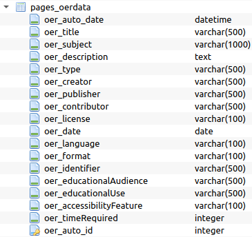

acikders.net
Doktora Tezi: Açık Eğitim Kaynakları (AEK) için Semantik Üst Veri Modeli Tasarımı
Yazar: Dr. R. Orçun Madran, Bilgi Yönetimi Bölümü, Hacettepe Üniversitesi
Danışman: Prof. Dr. Yasemin Gülbahar Güven, BÖTE Bölümü, Ankara Üniversitesi
Özet: Eğitim kaynaklarının İnternet üzerinden erişilebilir hale gelmesi ve bunu takip eden Açık Eğitim Kaynakları hareketi, bilgiye erişimi öğretim süreçlerinin çok önemli bir bileşeni haline getirmiştir. İnternetin yaygınlaşması ve hemen her türlü iş akışının bu küresel ağa göre yeniden yapılandırılması eğitim teknolojileri açısından hem büyük fırsatlar doğurmuş hem de çözülmesi gereken problemleri de beraberinde getirmiştir. Açık lisanslar ile İnternet üzerinden paylaşıma sunulan eğitim kaynakları öğrenenler için büyük fırsatlar yaratmış, bu kaynaklara kolayca erişebilmek ise giderek zorlaşmıştır. Araştırma kapsamında yapılan incelemelerde açık eğitim kaynaklarına özel olarak tasarlanmış üst veri modeli ile yapılandırılmış dizinler ve buna bağlı arama motorlarının bilgi erişim açısından yaşanan problemlerin çözümünde etkili olacağı değerlendirilmiştir. Bu bağlamda açık eğitim kaynakları için semantik üst veri modeli tasarlanmıştır. Tasarlanan bu modele göre oluşturulmuş platformdaki arama deneyimlerinden elde edilen bulgular incelenmiş, model üzerinde iyileştirmeler ve geliştirmeler gerçekleştirilmiştir. Buna ek olarak platformda yapılan sorgular makine öğrenmesi algoritması tarafından analiz edilmiş ve öğrenenlere farklı açık eğitim kaynakları önerilmiştir. Araştırmanın bulguları göstermektedir ki, uygun şekilde yapılandırılmış üst veriler öğrenenlerin açık eğitim kaynaklarına erişimini kolaylaştırmaktadır ve arama sonucunda elde edilen sonuçlar öğrenenlerin beklentilerini karşılamaktadır.
Anahtar Kelimeler: Açık Eğitim Kaynakları, Açık Lisanslar, Eğitim Teknolojileri, Üst Veri, Bilgi Erişim
Önsöz: Açık eğitim kaynakları, İnternet’in yaygınlaşması ile birlikte öğrenenler için bilgiye erişim açısından önemli imkanlar sağlamaktadır. Dünyanın farklı bölgelerinden birçok eğitim kuruluşu, öğrenenler için geniş bir yelpazede ve değişik seviyelerde eğitim kaynaklarını açık lisanslar ile İnternet üzerinden kullanıma sunmaktadır. Bu eğitim kaynaklarının açık lisanslar ile paylaşıma sunulmuş olması ödeme duvarlarını ya da telif hakları benzeri bariyerleri devre dışı bıraksa da teknik açıdan kaynaklara erişimde yaşanan sorunlara çözüm üretememektedir. Bu bağlamda dijital ortamda nesnelerin tanımlanabilmesini sağlayan üst verilerin açık eğitim kaynaklarına erişimde kullanılması yaşanan erişim problemlerine çözüm sağlar niteliktedir. Bu çalışmada açık eğitim kaynakları için semantik üst veri modeli tasarlanmış ve tasarlanan bu model üzerine inşa edilen Web tabanlı bir platform üzerinde modelin bilgiye erişim açısından fayda sağlayıp sağlamadığı incelenmiştir. Araştırma sürecinde her zaman desteklerini hissettiğim başta danışmanım Prof. Dr. Yasemin GÜLBAHAR GÜVEN olmak üzere tez izleme komitesi üyeleri Prof. Dr. Nurettin ŞİMŞEK ve Prof. Dr. Tolga GÜYER’e teşekkür ederim. Akademik hayatım boyunca beni her açıdan destekleyen değerli hocalarım Prof. Dr. Yaşar TONTA ve Prof. Dr. Serap KURBANOĞLU’na da teşekkürü bir borç bilirim. Akademik çalışmaların yoğunluğu yüzünden kimi zaman ihmal ettiğim değerli eşim, oğlum ve tüm aile üyelerime de şükranlarımı sunarım.
Bölüm 1
Giriş
Tüm dünyayı saran küresel iletişim ağı İnternet’in kullanıcılar ile en yoğun etkileşime geçtiği katman kuşkusuz World Wide Web’dir (WWW - Web). Web, İnternet kullanıcılarının bilgiye erişimde kullandıkları en önemli araç haline gelmiştir (Berners-Lee, Cailliau, Groff ve Pollermann, 2010). 1989 yılında Tim Berbers-Lee tarafından yaratılan Web, geride bıraktığı 30 yılın ardından gündelik yaşamın hemen her alanında önemli bir değişime, iş akışlarında ise ciddi bir dönüşüme sebep olmuştur (“History of the Web”, t.y.). Web’in gelişimini incelediğimizde, ortaya çıkışından bugüne 3 farklı aşamanın yer aldığı görülmektedir. Bu aşamalar sırasıyla; Web 1.0, Web 2.0 ve Web 3.0 olarak isimlendirilmektedir.
Bilgi miktarındaki hızlı artışın bilgiye erişim sorununu beraberinde getirmesi, bilgiye erişimde büyük fırsatlar sunan İnternet’in bilgiye erişim sorununa yeni çözümler sağlamaya çalışmasına yol açmıştır (Tonta, 2001). Web’in gelişim sürecindeki aşamalar, bilgiye erişim sorununa çözüm getirecek yeni teknolojilerin ve kavramsal modellerin kullanımı ile şekillenmiştir.
Web’in ilk aşaması olan Web 1.0 sınırlı sayıda içerik sağlayıcının katkı verdiği durağan Web sayfalarından ve bunları bünyesinde barındıran Web sitelerinden oluşmuştur (Nath, Dhar, ve Basishtha, 2014). İçerikler genelde veri tabanı bağlantısı olmayan ve içeriğin dinamik olarak oluşturulmadığı basit sistemler üzerinden İnternet kullanıcısına aktarılmıştır. Bu aşamada bile Web üzerinde yer alan bilgi miktarı bilgiye erişim açısından ileriki süreçte yaşanacak sorunların bir habercisi niteliğinde olmuştur.
Web 2.0 ile içeriğe katkı sağlayan kullanıcı grubu büyümüştür. Bu grubun daha önce sadece bilgiye erişmek için kullandıkları İnternet, artık bilgiyi paylaştıkları en önemli mecralardan biri haline dönüşmüştür (Gülbahar, Kalelioğlu ve Madran, 2010). Web 2.0 ile yaşanan bu dönüşüm İnternet’te yer alan bilgi miktarında çok büyük bir artışa neden olarak çevrim içi bilgi miktarını hesaplanamayacak bir noktaya getirmiştir (Tonta, 2002). Web 2.0’ın genel özelliklerinin halen devam ettiği günümüzde bilgi erişim sorunu, artan işlemci gücü sayesinde tüm Web’in tam metin olarak dizinlenmesi ile çözümlenmeye çalışılmıştır (“How Google Search Works”, t.y.). Bu süreç arama motorlarının belirli bir algoritma ile dönen sonuç listelerini iyileştirmeye çalışması ile bir dereceye kadar kullanıcı dostu bir yapıya dönüştürülebilmiş, ancak yeterli olmadığı konusunda herkesin hemfikir olduğu gözlemlenmiştir.
Web 3.0 kavramsal olarak 2001 yılında Tim Berners-Lee ve arkadaşlarının Scientific American dergisinde yazdıkları “The Semantic Web - A new form of Web content that is meaningful to computers will unleash a revolution of new possibilities” adlı makaleleri ile ortaya konulmuştur (Berners-Lee, Hendler ve Lassila, 2001). Makale henüz İnternet’in dünya genelinde emeklediği bir dönemde yeni bir devrin kapılarını açmıştır. Tim Berners-Lee ve arkadaşlarının Web’in geleceği ile ilgili makalede kurguladıkları senaryo günümüzde halen bilişim firmaları tarafından gerçekleştirilmeye, uygulanabilir hale getirilmeye çalışılmaktadır. Gelişmelerin istenilen hızda gerçekleşmediğini gözlemleyen Tim Berners-Lee ve diğer bir grup arkadaşı, Anlamsal Web (The Semantic Web) adını verdikleri Web 3.0 için ilk makaleden 5 yıl sonra 2006 yılında “The Semantic Web revisited” adlı bir başka makale yazmışlardır (Shadbolt, Hall, ve Berners-Lee, 2006). Bu makalede Web’in anlamsal olarak kurgulanabilmesi için gerekli olan standartlardan ve üst veri yapısının oluşması önündeki engellerden bahsetmişler, bu konuda bazı çözüm önerilerinde bulunmuşlardır.
Web 3.0 ile hedeflenen anlamsal ilişkinin İnternet’te yer alan bilgi kaynakları arasında sağlıklı ve etkin bir şekilde sağlanabilmesi kolay değildir. Bu noktada konunun kavramsal olarak iyi anlaşılması, donanımsal olarak yeterli işlem gücünün var olması ve yazılımsal olarak uygun altyapının sağlanması gibi farklı uygulama seviyelerinde engellerin aşılması gerekmektedir.
Kavramsal olarak Anlamsal Web üzerindeki çalışmalar gerek akademik alanda gerekse de sektörel bazda olanca hızıyla devam etmektedir. Alanyazın incelendiğinde “Anlamsal Web”, “Anlamsal Ağ”, “Web 3.0”, “Nesnelerin İnterneti”, “Şeylerin İnterneti” gibi anahtar kelimelere sahip makale ve bildirilerde büyük bir artış görülmektedir. Yine bu anahtar kelimeler etrafında şekillenen bilimsel ve sektörel konferans, sempozyum, seminer ve toplantılarda ciddi bir artış vardır. Bilişim teknolojilerine yön veren firmaların yıllık geliştirici toplantılarındaki en önemli gündem maddelerinin büyük bir kısmını anlamsal ağ teknolojileri ve bunların geliştirildikleri platformlar oluşturmaya başlamıştır (“Google I/O 2018”, “Google I/O 2019”, t.y.).
Günümüzde bilgisayar teknolojileri alanındaki donanımsal gelişmeler umut vaat etmektedir. Doğal dil işleme, makine öğrenmesi, yapay öğrenme, derin öğrenme ve yapay zekâ alanlarında ihtiyaç duyulan işlemci gücü artık istenilen seviyelere ulaşmış, uygulamaların genel kullanıma sunulabilecek aşamaya gelmesini mümkün kılmıştır. Özellikle bulut bilişimin sağladığı olanaklar ile Anlamsal Web alanında uygulama geliştirmek isteyen geliştiriciler Google Compute Engine (“Google Cloud”, t.y.), Microsoft Azure (“Microsoft Azure”, t.y.) ve Amazon Web Services (“Amazon Web Services”, t.y.) gibi platformları çok ciddi altyapı yatırımlarına gerek olmadan kullanabilmektedir.
Anlamsal Web için hayati konulardan biri olan yazılım altyapısı ile ilgili olarak da gelişmeler umut vericidir. Sayısal dünyadaki nesneleri birbirleri ile ilişkilendirilebilecek ontolojik örüntüyü sağlayacak arayüzler geliştirilmiştir ve geliştirilmeye devam etmektedir (Jambhulkar ve Karale, 2016). Çalışmalar özellikle mevcut üst veri standartlarının geliştirilmesi ve tanımlayabildikleri alanların artırılması için sürdürülmektedir.
Anlamsal Web’in temel sorunu makinelerin nesneler arasındaki ilişkiyi ölçeklenebilir bir şekilde otonom olarak yapılandırmasında yaşanan güçlüklerdir. İnsanoğlu tarafından doğal bir akış içerisinde gerçekleştirilebilen bu bağlantılar makineler için imkansıza yakın bir görevi ifade eder. Tam da bu noktada makine öğrenmesi, derin öğrenme ve yapay zekâ devreye girmektedir. Makine tarafından anlamlandırılması istenen bir derlem ile ilgili uygun öğrenme ortamının sağlanması, Web 3.0 hedeflerine ulaşmak için iyi bir başlangıç olarak kabul edilmektedir. Bilim insanlarının ve bilişim sektörünün yoğun olarak çalıştıkları konu işte bu öğrenme ortamını sağlayacak ontolojilerin oluşturulması, bağlı verilerin yaratılması ve üst veri standartlarının geliştirilmesidir. Web 3.0’ın tam olarak hayata geçeceği ve belki de bir sonraki devrim olarak nitelendirilen Web 4.0’ın (Intelligent / Smart Web, Akıllı Web) örneklerinin görüldüğü dönem kendi kendine yetebilen (öğrenebilen) otonom sistemlerin dönemi olacaktır (Torres ve González, 2017).
Araştırmanın kuramsal altyapısını, yukarıda tanımlanan Web’in gelişim süreçlerine de temel oluşturan “Bilgi Erişim” kuramı oluşturmaktadır. Buna ek olarak bilgiye erişimdeki başarıyı arttırmak için yapılacak çalışmalara temel teşkil etmesi açısından “Performans Teknolojisi” kuramından da faydalanılmaktadır.
Bilgi erişim kuramı, bilgiye erişim sorununu irdeleyen ve bu soruna çözüm arayan farklı disiplinlerdeki araştırmaların ortaya koyduğu kavramsal yaklaşımlar olarak ifade edilebilir (Manning, Raghavan ve Schütze, 2008). Bilgiye erişimin temelini bilgi almak ve bilgi bulmak oluşturur. Bilgi ihtiyacı, bilgi arama, bilgi getirme ve erişim konularını kapsar. Salt metin tabanlı içerikleri değil, farklı medya ortamlarından oluşan dizileri de içerir (Göker ve Davies 2009). Bilgiye erişim, İnternet teknolojilerinden ve Web’den çok daha önce kullanılan bir kavramdır ancak günümüzde arama motorları üzerinde gerçekleştirilen doğal dille arama sonuçları açısından araştırmalara konu olmaktadır (Savoy ve Gaussier, 2010).
Bilgi Erişim Kuramı, düzenlenen bilgilere erişim sağlanmasını temel alır. Bilgi erişim bir nesneyi (fotoğraf, kitap, video, müzik vb.) temsil eden üst veriler aracılığıyla gerçekleşir. Bilgi gereksinimi olan kullanıcılar bu gereksinimlerini bir arayüz aracılığıyla önceden yapılandırılmış sistemlere girerler ve dizinleme işlemi sonucu bibliyografik kayıtlar oluşur. Bu bibliyografik kayıtlar üzerinde gerçekleşen sorgulama sonucunda çakışan alanların işaret ettiği kayıtlar listelenir. Bilgi erişim kuramının odaklandığı önemli konulardan biri de ilgililiktir. Listelenen kayıtların ilgililik oranına göre bilgiye erişim performansının değerlendirilebilmesi mümkün olur (Tonta, 2012).
Araştırmanın kuramsal altyapısını oluşturan diğer kuram olan “Performans Teknolojisi kuramı ise hedeflenen sonuçlara ulaşabilmek ve bu sonuçları iyileştirebilmek için bireylerin ya da kuruluşların bilimsel, sistematik bir şekilde çeşitli araçları, süreçleri ve fikirleri kullandığı bir uygulama alanının temelini oluşturur. Araştırma kapsamında bilgiye erişim performansının artırılmasında bu kuramın dayandığı temel ilkelerden yararlanılmaktadır.
Performans teknolojisi, insanın merkezde yer aldığı tüm süreçlerde performans artışını önceleyen bir yaklaşımdır. İnsan performansını arttırmaya yönelik sistematik ve kapsamlı çözümler üretmeyi hedefleyen performans teknolojisi kuramı, bu performansın mümkün olan en az maliyetle tamamlanmasını sağlamaya çalışmaktadır (Pershing, 2006).
Uluslararası Performans Geliştirme Derneği (International Society for Performance Improvement - ISPI) ise performans teknolojisini verimliliği ve yetkinliği geliştirmeye yönelik sistematik bir yaklaşım olarak tanımlamaktadır (ISPI, ty.). Performans teknolojisi, sorunların çözümü için insan performansının bir dizi yöntem ve prosedür izlenerek belirli bir strateji kapsamında en etkili şekilde kullanımı olarak da ifade edilmektedir. Daha spesifik olarak performans teknolojisi, insan davranışını ve başarısını pozitif yönde mümkün olan en verimli şekilde etkilemek için sistem analizi, tasarımı, geliştirilmesi, uygulanması ve değerlendirilmesi sürecidir.
İnsan performansının iyileştirilmesi olarak da bilinen İnsan Performans Teknolojisi (İPT) (Human Performance Technology - HPT), eğitim bilimleri ve öğretim teknolojileri alanlarını temel alan bir disiplindir (Stolovitch & Beresford, 2012). İnsan performans teknolojisi, akademik alanda yapılan araştırmalardan faydalanarak organizasyonlarda üretkenliği ve insan yetkinliğini geliştirmeye yönelik kararların alınmasını sağlar (Abaci, 2015). Sonuç temelli analitik bir yaklaşım olarak İPT tasarım metodolojisine sahiptir. Bu metodoloji sayesinde sistem tasarımı süreçlerinin içinde yer almayan kullanıcıların genel işleyişi anlamalarına yardımcı olur (Tosti, 2010).
Problem
Açık kavramı dünyada birçok farklı disiplin tarafından heyecanla takip edilen kavramlardan biri haline dönüşmüştür. Günümüzde paylaşım kültürünün en önemli destekçisi olarak nitelendirilebilen “Açık Hareketi”, açık bilim, açık erişim, açık veri, açık donanım, açık inovasyon, açık kaynak kod ve açık eğitim gibi açılımlarla entelektüel gelişimin lokomotifi olarak kendini göstermektedir.
Açık kavramı, 1980’li yılların başından itibaren açık kaynak kod hareketi ve özgür yazılım ile kendini göstermiştir. Teknoloji alanındaki gerek teknik gerekse de kuramsal hemen her gelişmeden ve yenilikten etkilenen eğitim bilimleri, açık kavramından da derinden etkilenmiştir. Sadece planlı öğretim faaliyetlerinde değil, özellikle geleneksel eğitim sisteminin dışında ve yaşam boyu öğrenme süreçlerinde açık kavramı kendisine açık eğitim olarak yer bulmuştur.
Açık Eğitim, en genel tanımı ile akademik olarak herhangi bir akreditasyona gerek duyulmayan, herhangi bir kabul şartı aranmayan ve genellikle çevrimiçi olarak sunulan eğitimdir (Open Education, 2019). Uluslararası bir eğitim topluluğu olan ve her yıl açık eğitim haftasını organize eden Open Education Global’e göre de açık eğitim, dünya çapında eğitime erişimi arttırmak için açık paylaşım çerçevesinde sunulan kaynakları, araçları ve uygulamaları kapsar (“What is Open Education”, t.y.).
Açık Eğitim, günümüzde her seviyeden öğrenenin eğitim kaynaklarına rahatça ve sınırsız bir şekilde ulaşabilmesine olanak sağlayan kavramsal bir model üzerinde gelişimine devam etmektedir. Dünyanın farklı coğrafi bölgelerindeki farklı ölçeklere sahip birçok eğitim kurumu açık eğitim ile ilgili çalışmalar yürütmektedir. Bu çalışmaları sadece hizmet verdikleri sınırlı bir topluluğun değil, tüm insanlığın erişimine sunmaktadırlar.
Açık Eğitim kapsamında hazırlanan tüm materyaller ve bu materyallerin İnternet üzerinden erişimine olanak sağlayan tüm sistemler Açık Eğitim Kaynakları (AEK) olarak ifade edilebilir. AEK serbestçe erişilebilir, açık lisanslı metin, medya ve öğretim, öğrenme, değerlendirme ve araştırma amaçları için yararlı olan diğer dijital varlıklardır (Open Educational Resources, 2020). UNESCO’ya göre AEK, “kamu malı olan veya kaynakların serbest kullanımını, uyarlanmasını ve dağıtımını kolaylaştıran fikri mülkiyet lisansları ile yayımlanan öğretim, öğrenme veya araştırma materyalleridir” (“UNESCO Open Educational Resources”, t.y.).
Açık Eğitim Kaynakları, Massachusetts Teknoloji Enstitüsü’nün (Massachusetts Institute of Technology, MIT) Açık Ders Malzemeleri Portalı’nda (“MIT OCW”, 2017) ve Türkiye Bilimler Akademisi’nin (TÜBA) Ulusal Açık Ders Malzemeleri Portalı’nda (“TÜBA Ulusal Açık Ders Malzemeleri Portalı”, t.y.) olduğu gibi belirli bir düzende ve konu bütünlüğü dikkate alınarak oluşturulmuş olabilir. Buna ek olarak birbirinden bağımsız materyallerin bir arada yer aldığı YouTube (“YouTube”, t.y.) ve Vimeo (“Vimeo”, t.y.) gibi medya sunucuları üzerinde de yapılandırılabilirler.
Açık Eğitim Kaynaklarına yukarıda bahsedilen genişlikte bir yelpazeden erişilebiliyor olması öğrenenlerin bu kaynakları çevrimiçi platformlar (arama motorları vb.) üzerinden tarayıp bulabilmelerini her geçen gün zorlaştırmaktadır. Arama motorlarının tam metin olarak gerçekleştirdikleri dizinleme çalışmaları yetersiz kalmakta, kimi zaman arama sonuçlarını olumsuz olarak etkilemektedir.
Öğrenenlerin açık eğitim kaynaklarına etkin bir şekilde erişebilmesi için tarama, harmanlama, dizinleme ve dolayısıyla bu kaynaklara erişim aşamalarının tamamında geleneksel tam metin dizinleme çalışmalarının yerini öğrenme nesneleri arasında ilişkinin kurulabileceği anlamsal arama sistemlerinin alması gerekir. Özellikle kişiselleştirilmiş ve uyarlanmış öğrenme gibi kavramların önem kazandığı günümüzde, bireysel özelliklere ve tercihlere en uygun öğretim içeriğinin doğru ve hızlı biçimde konumlandırılması, kısaca kişisel beklentiler ile uygun içeriğin eşleştirilmesi, “etkili öğrenme” sürecini destekleyecek en önemli adımlardan birisidir.
Öncelikli olarak öğrenme nesneleri için özel olarak geliştirilmiş bir üst veri setine ihtiyaç duyulmaktadır. Bu ihtiyacın karşılanabilmesi için çeşitli girişimler başlatılmıştır. LRMI (Learning Resource Metadata Initiative - Öğrenme Kaynakları Üst Veri Girişimi) bu girişimlerden birisidir. 2011 yılında çalışmalara başlayan LRMI, 2014 yılında LRMI 1.1 Tanımlamalarını DCMI’ye (Dublin Core Metadata Initiative - Dublin Çekirdek Üst Veri Girişimi) (“Dublin Core Metadata Initiative”, t.y.) aktarmış ve çalışmalar DCMI’nın Eğitim Topluluğu altında yeni oluşturulan LRMI Görev Grubu tarafından sürdürülmeye başlanmıştır (“Learning Resource Metadata Initiative”, t.y.).
Bir sonraki aşamada akademik yayınların harmanlanmasını mümkün kılan OAI-PMH (The Open Archives Initiative Protocol for Metadata Harvesting - Üst Veri Harmanlaması için Açık Arşivler Girişimi Protokolü) benzeri bir protokol açık eğitim kaynakları içinde oluşturulmalıdır. LRMI veri seti ile entegre olarak kullanılacak olan harmanlama protokolü, açık eğitim kaynaklarının anlamsal olarak ilişkilendirilmelerini sağlayacak altyapıyı oluşturacaktır (“The Open Archives Initiative Protocol for Metadata Harvesting”, t.y.).
Bu bağlamda açık eğitim kaynaklarına erişilmesi ve doğru sınıflandırılması sırasında yaşanan en önemli problem, AEK için kabul görmüş ve yaygın kullanılan bir üst veri modelinin geliştirilmemiş olmasıdır.
Belirtilen probleme dayalı olarak bu çalışmaya yön veren araştırma soruları aşağıdadır:
- Öğrenenlerin açık eğitim kaynaklarına erişim süreçlerini daha etkili hale getirecek üst veri modeli nasıl tasarlanmalıdır?
- Tasarlanan üst veri modelini temel alan bir arama motoru nasıl geliştirilmelidir?
- Arama sonuçlarının öğrenen açısından optimum düzeye getirilmesi nasıl sağlanabilir?
Amaç
Araştırmanın ana amacı, öğrenenlerin açık eğitim kaynaklarına daha etkili şekilde erişimini sağlayacak bir semantik üst veri modeli geliştirilmesidir. Bu genel amaç doğrultusunda aşağıdaki alt amaçlar da yer almaktadır:
- AEK için oluşturulacak üst veri modeline açık lisansların entegre edilmesi.
- AEK üst veri modelinin test edilmesini için bir arama motoru geliştirilmesi.
- Aramada kullanılan anahtar kelimeler ile AEK üst verileri arasında anlamsal bir ilişkinin makine öğrenmesi algoritmaları yardımıyla otomatik olarak sağlanması.
Önem
Bilgiye erişim öğrenme süreci içerisinde çok önemli bir yere sahiptir. (Ott ve Meurers, 2010). Öğrenenin bilgi sahibi olmak istediği konudaki eğitim kaynaklarına en hızlı şekilde ulaşabileceği ortam günümüzde İnternet’tir. İnternet özellikle eğitim kaynaklarının kitlesel erişime açılabilmesini kolaylaştırmış ve bu noktada öncü rol oynamıştır. Öğrenenler için neredeyse sınırsız bir kaynak olarak görülen İnternet, bilgiye erişim açısından her geçen gün daha da zorlu bir ortama dönüşmektedir (Tonta, Bitirim ve Sever 2002).
Açık eğitim kaynaklarına ulaşmak için arama motorlarında bir arama yapıldığında, birçok farklı Web sitesinden ya da farklı içerik portallarından anahtar kelimelerle eşleşen onlarca, yüzlerce, kimi zaman ise binlerce sonuç listelenir. Bu sonuçlar içerisinde arama motoru tarafından yapılan sıralama o sayfanın arama motoru özelindeki değeri ile ilgilidir, çoğu zaman herhangi bir anlamsal ilişki içermez. Bu noktada kullanıcı belki de yeni öğrenmeye başlayacağı bir konu ile ilgili sadece popüler sonuçlara erişebilmektedir. Kendisi için uygun bir başlangıç noktası ya da kendine rehberlik edebilecek bir yol haritasını elde edemeyecektir.
Günümüzde önemli bir risk oluşturan ve halen etkilerini hissettiğimiz Covid-19 ve benzeri salgın hastalıklar ya da deprem, sel, yangın gibi doğal afetler, öğretim süreçlerinin açık ve çevrimiçi platformlara doğru kaydırılması zorunluluğunu da beraberinde getirmektedir. Bu bağlamda açık eğitim kaynaklarına erişebilmek daha da önemli hale gelmektedir.
Öğrenenin belirli bir konuyu öğrenme süreci içerisinde ihtiyaç duyacağı yol haritası öğrenme nesneleri arasındaki ilişki kullanılarak oluşturabilecektir. Bu sayede hem eğitmenler hem de öğrenenler açık eğitim kaynakları içerisinde yaptığı bir arama sonucunda sadece seçtiği anahtar kelimeler ile eşleşen sonuçlarla yetinmek zorunda kalmayacaktır. Araştırmanın önemi, dijital ortamda sayıları her geçen gün artan açık eğitim kaynaklarına öğrenenin erişiminin en etkin şekilde sağlanabilmesine olanak tanımasıdır.
Özetlemek gerekirse kabul görmüş ve yaygın olarak kullanılan bir üst veri modelinin AEK için bulunmaması yapılan çalışmayı özgün kılmaktadır. Geliştirilen model farklı platformlarda AEK dizinlenmesinin gerçekleştirilebilmesi açısından ve öğrenenlerin bu dizinleme sonucu kullanabilecekleri arama altyapılarının oluşturulması açısından işlevseldir. Bu bağlamda gerek öğrenenlere gerek dizinleme çalışmalarını gerçekleştirenlere, gerekse de bilgi sistemleri içerisinde AEK ile ilgili arama özelliği eklemek isteyen geliştiricilere fayda sağlamaktadır.
Sınırlılıklar
Bu araştırmanın sınırlılıklarını aşağıdaki 3 başlık altında ele alarak araştırma sürecini bu bağlamda irdelemek ve bulguları bu çerçevede yorumlamak anlamlı olacaktır.
- Veri kaynakları: İndekslenen açık eğitim kaynakları Bilge-İş ve Akadema’da yer alan 200 dersten oluşmaktadır. İndekslenen bu 200 ders konu ve kapsam açısından sınırlı bir içeriğe sahiptir.
- Katılımcılar: Bu araştırmaya gönüllü katılım sağlayanlar Ankara Üniversitesi Bilgisayar ve Öğretim Teknolojileri Eğitimi Bölümü ve Hacettepe Üniversitesi Bilgi ve Belge Yönetimi Bölümü lisans öğrencileri ile sınırlıdır.
- Veri toplama araçları: Araştırmanın veri toplama süreçlerinde görüşme ve anket yöntemlerinin seçilmiş olması bir sınırlılık olarak görülebilir.
Tanımlar
Üst Veri: En genel tanımı ile “veri hakkında veri” anlamına gelmektedir (Taşkın, 2019). Bir kaynağın ya da verinin öğelerini tanımlayan bilgilerdir (Metadata, 2020). Verilerin bulundukları ya da üretildikleri sistem dışında diğer sistemler tarafından okunabilmesini ve analiz edilebilmesini sağlarlar.
Üst Veri Standartları: Sistemler arası üst veri kullanımını mümkün kılabilmek için üst verilerin belirli standartlara göre oluşturulması gerekmektedir. En çok bilinen ve kullanılan üst veri standardı Dublin Core Metadata Initiative (DCMI) tarafından geliştirilen DC’dir (Taşkın, 2019). Farklı disiplinler için geliştirilen birçok üst veri standardı DC’yi temel alır ve bu standardın üzerinde bazı ekleme ve çıkarmalar yapar.
Üst Veri Harmanlama: Farklı bilgisayar sistemleri (web siteleri, veri tabanları, portallar vb.) üzerinde yer alan dijital kaynakların, belirli standartlara göre oluşturulmuş üst verilerinin bir yazılım aracılığıyla toplanmasına üst veri harmanlaması denir.
Üst Veri Harmanlama Protokolü: Dijital kaynakların üst verilerini harmanlayan sistemlerin, harmanlama işlemini hangi standartlar çerçevesinde yapacağını belirleyen protokollerdir. Açık Arşivler Girişimi tarafından geliştirilen Açık Arşivler Girişimi Metadata Harmanlama Protokolü (OAI-PMH), harmanlama sistemleri içerisinde en çok tercih edilen protokollerden biridir (“Open Archives Initiative”, t.y.).
Açık Eğitim: Akademik olarak herhangi bir akreditasyona gerek duyulmayan, herhangi bir kabul şartı aranmayan ve genellikle çevrimiçi olarak sunulan eğitimdir (Open Education, 2019).
Açık Erişim: Kamu kaynakları ile desteklenen araştırmalardan üretilen yayınların tam metinlerine çevrimiçi olarak ücretsiz erişim sağlanmasına açık erişim denir (Tonta, 2015).
Açık Lisans: Açık Lisanslar, katı bir telif hakkı koruması içeren “her hakkı saklı” kavramı yerine “bazı hakları saklı” yaklaşımını benimseyen, her türden eserin paylaşımına, yeniden kullanımına ve adaptasyonuna telif sahibinin belirlediği haklar çerçevesinde izin veren lisanslardır. Dünya genelinde yaygın olarak kullanılan açık lisanslar Creative Commons (CC) tarafından kullanıma sunulan lisanslardır. CC, bilginin paylaşımına, tekrar kullanımına ve adaptasyonuna olanak veren lisanslama araçlarına sahip kâr amacı gütmeyen uluslararası bir organizasyondur. Creative Commons, bu amaçları gerçekleştirebilmek için açık lisanslar topluluğu sunar. Creative Commons lisansları, eserin ilk sahibinden itibaren katkı veren herkese (tüzel ya da gerçek kişiler) atıf vermek şartıyla, lisansta belirtilen haklar çerçevesinde tekrar izin almaya gerek olmadan eserin kullanımına olanak sağlar. Creative Commons lisansları logo ve lisans kodları aracılığı ile hak sahibi ile kullanıcısı arasındaki iletişimi hızlandırır, paylaşımı sağlar, kullanımı artırır, yaratıcılığı ve inovasyonu güçlendirir (Madran ve Holt, 2020).
Açık Eğitim Kaynakları: Açık Eğitim kapsamında hazırlanan tüm materyaller ve bu materyallerin İnternet üzerinden erişimine olanak sağlayan tüm sistemler Açık Eğitim Kaynakları (AEK) olarak ifade edilebilir.
Makine Öğrenmesi: Bilgisayarın sadece verilen kodlarla programlanmadığı, üzerinde çalışılan problem ile ilgili olarak veri setlerinden elde edilen bilgilerin de sürece dahil edildiği bir çalışma alanıdır. Yapay zekanın bir alt bileşeni olarak tanımlanabilir ve derin öğrenme olarak da ifade edilebilir (Özdemir ve Örslü, 2019).
Derlem: Türk Dil Kurumu’nun Güncel Türkçe Sözlüğü’nde “Bir dilin türlü kullanım alanlarından derlenmiş örneklerinin dil bilgisi ve kuramsal dil bilimi araştırmalarında kullanılmak üzere bilgisayar tarafından okunabilecek biçimde bir araya getirilmiş kümesi.” şeklinde tanımlanmıştır (“Türk Dil Kurumu Sözlükleri: Güncel Türkçe Sözlük”, t.y.). Bu çalışmada derlem, makine öğrenmesinde eğitim verisi olarak kullanılacak Türkçe metinleri kapsamaktadır.
Creative Commons Rights Expression Language (CC REL): Lisans bilgilerinin RDF (Resource Description Framework / Kaynak Tanımlama Çerçevesi) kullanılarak nasıl tanımlanabileceğini ve lisans bilgilerinin çalışmalara nasıl eklenebileceğini açıklayan bir işaretleme dilidir (CC REL, 2018).
Bölüm 2
Kavramsal Çerçeve ile İlgili Araştırmalar
Bu bölüm altında yer alan bilgi erişim kuramı ve bu kuram altında detaylandırılan alt başlıklar araştırmanın kavramsal temelini oluşturmaktadır.
Bilgi Erişim Kuramı
İnsanlık bilgi üretmeye başladığı andan itibaren eş zamanlı olarak bilgiye erişim konusunda da çalışmalar yapmaya başlamıştır. Üretilen bilgi miktarı insanlık tarihi boyunca her geçen gün artmakta, bilgiye erişim konusunda yaşanan problemlerin çözümü de git gide daha fazla önem kazanmaktadır. Akıllara şöyle bir soru gelebilir: “Bilgiye erişebilmek neden bu kadar önemli?”. Bu soruya yanıt verebilmek ve araştırmaya temel teşkil eden kuramsal alt yapıyı daha iyi anlayabilmek için öncelikle “bilgi” kavramına göz atmak gerekir.
Bilgi, birçok farklı sözlük anlamına sahip bir kelimedir. Özellikle soyut bir kavram olması onun tanımlanmasını bir ölçüde zorlaştırmaktadır. Sözlüklerde bilgi ile ilgili tanımlara baktığımızda; “İnsan aklının erebileceği olgu, gerçek ve ilkelerin bütünü, bili, malumat”, “Öğrenme, araştırma veya gözlem yolu ile elde edilen gerçek”, “İnsan zekâsının çalışması sonucu ortaya çıkan düşünce ürünü”, “Genel olarak ve ilk sezi durumunda zihnin kavradığı temel düşünceler”, “Kurallardan yararlanarak kişinin veriye yönelttiği anlam” şeklinde farklı bakış açılarının yer aldığını görürüz. Ancak tüm bu tanımların belki de ortak noktası, insanların hayatta kalabilmesi ve gelişimlerine devam edebilmeleri için kazandıkları deneyimleri, bir anlamda elde ettikleri bilgiyi yeniden kullanabilmelerine bağlı olduğu gerçeğidir. Buckland’a (1991, s. 1-2) göre bilgi kelimesinin üç temel kullanım şekli bulunmaktadır:
- Süreç olarak bilgi (information-as-process)
- Bilgi olarak bilgi (information-as-knowledge)
- Nesne olarak bilgi (information-as-thing)
Süreç olarak bilgi, öğrenme süreci sırasında bilgilenme etkinliğinin tamamı olarak ifade edilebilir. Bilgi olarak bilgi ise, öğrenme süreci içerisinde aktarılan ve elde edilen deneyimler ile yoğrulmuş, dönüşüme uğramış olan bilgiyi temsil eder. Nesne olarak bilgi, belki de bizim en rahat tanımlayabildiğimiz ve somut olarak ifade etmekte zorlanmadığımız veri ya da belgeleri nitelemek için kullanılır. Bilginin depolanması, paylaşılması ve yeniden kullanılması, yani bir anlamda bilginin işlenmesi ile ilgili süreçlerin tamamı da bilgi teknolojisi olarak adlandırılmaktadır (Buckland, 1991, s. 5).
Bilgi kavramı üzerinde genel hatları ile durduktan sonra bilgi erişim tanımı üzerinde durabiliriz. Bilgi erişim (information retrieval), bir bilim disiplini olarak yaklaşık 70 yılı aşkın bir geçmişe sahiptir. Bilgi erişim, “bilgi toplama, sınıflama, kataloglama, depolama, büyük miktardaki verilerden arama yapma ve bu verilerden istenen bilgiyi üretme (veya gösterme) teknik ve süreci” olarak tanımlanmaktadır (Tonta, 2001). Bilgi erişim, bilgi öğelerinin temsili, depolanması, organizasyonu ve bunlara erişim ile ilgilenirken bir yandan da kullanıcının bilgi ihtiyacını tanımlamaya çalışır ve ilgilendiği bilgilere kolay erişimini hedefler. Ancak unutulmamalıdır ki kullanıcı bilgi ihtiyacının tanımlanması basit bir problem değildir (Baeza-Yates ve Riberto-Neto, 1999).
Bilgi Erişim ve Veri Erişim Arasındaki Fark
Bilgi erişim sistemi bağlamında veri erişimi, bir derme içerisinde yer alan kullanıcı sorgusundaki anahtar sözcükleri içeren belgeleri belirlemekten oluşur ve bunlar çoğunlukla kullanıcı bilgi ihtiyacını karşılamak için yeterli değildir. Aslında herhangi bir kullanıcı, belirli bir sorguyu karşılayan verileri (kayıtları) almaktan çok bir konu hakkında bilgi almakla ilgilenir. Basit bir sorgulama veri tabanı sistemini kullanan kişiye bir çözüm sunarken, bir konu veya konu hakkında bilgi alma sorununu çözmez. Kullanıcı bilgi ihtiyacını karşılama girişiminde etkili olması için, bilgi erişim sistemi bir koleksiyondaki belgelerin içeriğini bir şekilde yorumlamalı ve bunları kullanıcı sorgusuyla ilgililik derecesine göre sıralamalıdır. Bu nedenle, ilgililik kavramı bilgi erişimin merkezinde yer alır. Sonuçta bilgi erişim sisteminin birincil amacı, mümkün olduğunca az sayıda ilgisiz belgeye ve kullanıcı sorgusu ile ilgili tüm belgeler ulaşmaktır (Baeza-Yates ve Riberto-Neto, 2011).
Bilgi Erişim Sorunu
Bilişim teknolojilerindeki kapasite artışı ve beraberinde getirdiği yüksek depolama olanağı bilgi erişim sorunu için tek başına bir çözüm sağlamamaktadır. Bilakis üretilen ve depolanan bilginin sürekli artıyor olması bilgiye erişimi daha zorlu bir süreç haline getirmektedir. Artık bilgi erişimde ihtiyacımız olan ilgili sonuçların listelenmesi değil, “en ilgili” sonuçların listelenmesidir. Bunun önemini günümüzde arama motorlarında yaptığımız basit bir arama sonucunda görüntülenen milyonlarca bağlantıdan yola çıkarak anlayabiliriz.
Bilgi erişim açısından avantaj sağlayacak ve en ilgili sonuçlara ulaşmamızı sağlayacak yapılandırılmış veri üzerinden erişimin gerçekleşmesi özellikle İnternet ile yoğunluğu artan dijital platformlar için başlıca çözüm yollarından biri haline gelmiştir. Bu yapılandırılmış veriler üzerinde uygulanacak farklı algoritmalar da bilgi erişim başarısını arttırarak kullanıcıların beklentilerini karşılamada önemli bir rol oynamaktadır (Vickery ve Vickery, 2004).
Bilgi Erişim Modelleri
Bilgiye erişim modelleri sorgu cümlesindeki anahtar kelimelerle, sorgunun yapıldığı yapılandırılmış verilerden oluşan dizin arasında herhangi bir çakışma olup olmadığını belirleyen erişim kurallarından oluşur. Bu erişim kurallarının her biri bir erişim modeli olarak da adlandırılabilir (Tonta, 1995). Bu bağlamda üç temel bilgi erişim modeli bulunmaktadır:
- Boole Modeli: Bu modelde sorgu cümlesindeki terimlerin dizin içinde yer alıp almadığına göre erişim sağlanır. Erişim açısından sorgu terimlerinin her biri eşit ağırlığa sahiptir. Sorgulamada kullanılan terimler arasındaki ilişkiler Boole mantığı (ve, veya) ile belirlenebilir.
- Olasılıksal Model: Bu modelde sorgulamada kullanılan terimlerin ağırlıkları kullanıcılar tarafından belirlenebilir.
- Vektör Uzay Modeli: Bu modelde ise sorgulamada kullanılan terimler ile dizinlemede kullanılan terimlerin belirli ağırlıkları vardır. Ancak terimler çok boyutlu bir uzayda vektörler olarak işlem görürler.
Her bir modele ilişkin ayrıntılı süreçler aşağıda açıklanmaktadır.
Boole Modeli
Boole modeli ilişkisel veri tabanı sistemlerinde ve Web üzerinde çalışan arama motorlarında yaygın olarak kullanılan bir modeldir. Günümüzde hemen hemen tüm ticari veri tabanı ve erişim sistemleri tarafından kullanılan bu model, Boole mantığına ve küme kuramına dayanmaktadır. Aranacak belgeler ve kullanıcı sorgusu terim kümeleri olarak algılanır. Erişim, belgelerin sorgu terimlerini içerip içermediğine bağlıdır.
Geleneksel olarak, "gerçek" bir belge bir kitap, bir makale, bir açık eğitim kaynağı veya AEK içinde yer alan herhangi bir ses, metin ya da video dosyası olabilir. Bu belgelere erişim sağlanabilmesi için terim setleri ile temsil edildikleri düşünülür. Uygulamada, orijinal belge (ör AEK) ve onun temsili (üst verisi) iki farklı varlıktır. Sorguda n sayıda terim (t) bulunabilir. Bu terimlerin birbiri ile çakışması ikili sistemdeki bir (1) ve sıfır (0) ile ifade edilir. Kesişen terimler arasındaki ilişki “1” ile, kesişmeyen terimler arasındaki ilişki ise “0” ile gösterilir. ta, tb, ve tc terim setleri arasındaki kesişimden ortaya çıkan ikili düzen Şekil 1’de gösterilmektedir (Baeza-Yates ve Riberto-Neto, 1999).
Şekil 1. Sorguyu Temsil Eden Üç Bileşen.
Olasılıksal Model
Olasılıksal Model’in temelini Roberston ve Spark Jones’un 1976 yılında yayınlanan “Relevance weighting of search terms” (Arama terimlerinin ağırlıklı ilgililiği) başlıklı makalesi oluşturur (Roberston ve Spark, 1976). Daha sonraki yıllarda bu makalede ele alınan yaklaşım ikili bağımsız erişim (binary independence retrieval) modeli olarak da anılmaya başlanmıştır. İlgililiğin ağırlıklı olarak belirlenmesinde temel alınan ana prensip bir anahtar kelimeye ya da bir terime diğer anahtar kelimelerden ya da terimlerden daha çok önem verilmesidir.
Olasılıksal Model’de sorguda kullanılan anahtar kelimeler ya da dizinlenen kayıtlardaki çakışan terimler farklı ağırlıklara sahip olabilir ve sorgulama sonucu erişilen kayıtlar bu ağırlıklandırma dikkate alınarak listelenir. Sorgulama yapılacak derlemin dizinlenmesi aşamasında belirlenen üst veri alanlarına değişik seviyelerde önem atfedilebilir. Örneğin, eser adının sistem içerisindeki ağırlığı konu başlıkları olarak kullanılan anahtar kelimelerden daha az olarak belirlenebilir. Ağırlıklandırma işleminin sorguyu gerçekleştiren kullanıcı tarafından belirlenmesi de sağlanabilir. Sorguda kullanılacak anahtar kelimeleri girme sırası bu tür bir ağırlıklandırma işlemi için kullanılabilir.
Olasılıksal Model modern erişim sistemleri içerisinde (ör: arama motorları) belirli algoritmaların geliştirilerek ilgili sonuçların bu algoritmalar temel alınarak listelenmesini sağlamaktadır. Algoritmalar içerisinde önceki sorgulardan elde edilen deneyimler dikkate alınarak iyileştirmeler yapılmakta ve en ilgili sonuçların listelenmesi için algoritmalar üzerindeki çalışmalar sürekli devam etmektedir. Günümüzde yoğun olarak bilgiye erişim için kullandığımız İnternet tabanlı arama motorlarının başarılarını kendilerine özgü algoritmalarına borçludurlar. Aynı derlemi dizinleyen farklı arama motorlarının aynı anahtar kelimeler kullanılarak sorgulanmasında farklı sonuç listelerinin oluşmasının nedeni kullanılan erişim algoritmalarının farklı oluşudur (Görsel 1).
Görsel 1. Google ve Yandex Arama Motorlarında “açık erişim” Anahtar Kelimesi ile Yapılmış Olan Sorgu Sonuçlarının Listelenmesi.
Vektör Uzay Modeli
Vektör uzay modelinde, ikili ağırlıklandırmanın sınırlayıcılığı karşısında belirli bölümlerin kendi içinde kısmi olarak ağırlıklandırılmasını mümkün kılan bir çerçeve yer almaktadır. Bu çerçevenin temelini sorgulardaki ve belgelerdeki dizin terimlerine ikili olmayan ağırlıklar atanması oluşturmaktadır. Bu terim ağırlıkları, sistemde depolanan her belge ile kullanıcı sorgusu arasındaki benzerlik derecesini hesaplamak için kullanılır. Vektör modeli, erişilen belgeleri bu benzerlik derecesine göre azalan bir düzende sıralayarak, sorgu terimleriyle yalnızca kısmen eşleşen belgeleri de dikkate alır. Sonuç olarak, Boole Modeli tarafından oluşturulan listelemeden çok daha ilgili bir erişim listesi oluşturulmuş olur.
Vektör uzay modelinde belgeler ve sorgular vektörler (çizgeler) olarak ifade edilirler. Her boyut ayrı bir terime karşılık gelir. Sorguda kullanılan terim belge içinde geçiyorsa, vektördeki değeri sıfır değildir. Terim ağırlıkları olarak da bilinen bu değerleri hesaplamak için farklı yöntemler geliştirilmiştir (Salton ve McGill, 1983). En çok bilinen ve kullanılan yöntem TF-IDF (term frequency-inverse document frequency) olarak ifade edilen terim frekansı-ters belge frekansı ağırlıklandırmasıdır (Alupoaie ve Cunningham, 2013).
Terimin belge içinde tekrarlanma sayısı “terim frekansı” olarak ifade edilir. Bir terim belge içinde tekrar ettikçe o terimin frekans değeri artar. Birden fazla belgede ilgili terimin bulunması ise “ters terim frekansı” olarak ifade edilir. Bir terim ne kadar az dokümanda bulunursa o kadar değerli olduğu kabul edilir. Bütün cümlelerde bulunabilecek “ve”, “veya”, “ya da”, “bunlar”, “şunlar” gibi terimler ters terim frekansına etki edecek terimlere örnek olarak verilebilir. Bu ve benzeri terimler hemen her belgede yer almakta ve belge hakkında herhangi bir tanımlayıcı özelliğe sahip olmamaktadır. Bu yüzden bu tür terimlerin bilgi taşımadığı kabul edilmektedir (Uçkan ve diğerleri, 2019). Terimin vektör uzayındaki yerini tespit eden ağırlık değerinin TF-IDF’ye göre hesaplanması aşağıdaki denklemde gösterilmektedir.
tfi : Belge içinde terimin (i) bulunma sayısı.
dfj: i teriminin en az bir defa bulunduğu belge sayısı.
N : Toplam doküman sayısı

Terimin ağırlığı hesaplandıktan sonra bu ağırlıklandırma arama algoritması içerisinde erişilen belgelerin listelenmesi belirleyici rol oynamaktadır (Croft, Metzler ve Strohman, 2015).
Temel Erişim Modellerinin Karşılaştırılması
Genel olarak Boole Modeli en zayıf klasik yöntem olarak kabul edilir. Ana sorunu genellikle kısmi eşleşmeleri tanıyamaması sonucu ortaya çıkan düşük performanstır. Olasılıksal modelin vektör modelinden daha iyi performans gösterip göstermediği konusunda bazı tartışmalar bulunmaktadır. Bruce Croft, yapmış olduğu deneysel çalışmalarda Olasılıksal Model’in daha iyi bir erişim performansı sağladığını öne sürmektedir. Salton ve Buckley ise daha sonraları yaptıkları çalışmalarda bunu reddetmişler ve Vektör Uzay Modeli’nin daha tatmin edici sonuçlar sağladığını belirtmişlerdir (Salton ve Buckley, 1988). Vektör Uzay Modeli araştırmacılar, uygulayıcılar ve Web geliştiricileri topluluğu genelinde popülaritesi yüksek bir bilgi erişim modeli olarak da karşımıza çıkmaktadır (Baeza-Yates ve Riberto-Neto, 1999).
Bilgi erişim sistemlerinin temelini hangi erişim modeli oluşturuyor olursa olsun, modelin çalışacağı altyapının sahip oldu özellikler bilgi erişim performansının artırılması açısından belirleyici olmaktadır. En önemli altyapı bileşeni olarak ifade edebileceğimiz üst veriler ile yapılandırılmış ve standartlar çerçevesinde dizinlenmiş kayıtlara sahip derlemlerin oluşturulması hayati öneme sahiptir. Bu çalışmanın ana amacını oluşturan AEK için üst veri modelinin oluşturulması bilgi erişim modellerinin uygulanabilmesi açısından zorunluluk içermektedir.
AEK Konusunda Üst Veri Bağlamında Yapılan Araştırmalar
Alanyazın incelendiğinde ülkemizde AEK ile ilgili üst veri bağlamında yapılan çalışmaların yurtdışı kaynaklı çalışmalar ile kıyaslandığında sayıca çok az olduğu görülmektedir. Türkiye’de üst veri ile ilgili farklı disiplinlerde çalışmalar olmasına rağmen AEK temel alan çalışmalar alana yeterli katkıyı sağlayacak yoğunluğa ulaşmamıştır. Öğrenme nesnelerinin ambarlarda depolanması ve kullanımı ile ilgili çalışmalar olsa da bu çalışmalar daha çok oluşturulan öğrenme nesnesi ambarlarının eğitsel etkinliklerde kullanımı ile ilgilidir. Bu ambarlara nesnelerin nasıl kaydedileceği, hangi standartların kullanılacağı, etkili bir şekilde bu nesnelere erişim ile ilgili çalışmalar istenilen seviyede değildir. Prof. Dr. Tuncay Yiğit’in yürütücülüğünde 2017 yılında gerçekleştirilen TÜBİTAK destekli “Öğrenme Nesne Ambarları İçin Zeki İçerik Yönetim Yazılım Ana Çatısı” adlı proje Türkiye’de bu konuda yapılan çalışmalardan biridir (Yiğit ve Işık, 2017). Çalışma kapsamında geliştirilen “Zeki Öğrenme NESne Ana çatısı (ZONESA)” adlı sistemde, öğrenme nesnelerinin tanımlanması için IEEE Teknoloji Standartları Komitesi’nin Öğrenme Nesnesi Üst Veri seti “LTSC LOM” (Learning Technology Standards Committee Learning Object Metadata) kullanılmıştır. IEEE LTSC LOM içerisinde 9 kategori ve bu kategoriler altında 70 civarında tanımlayıcı ifade yer almaktadır (IEEE LOM, 2002).
Bir diğer çalışma ise Doç. Dr. Aras Bozkurt’un yürütücülüğünde TÜBİTAK 1001 Programı desteği ile gerçekleştirilen “Yükseköğretimde Eğitsel İçeriklerin Sunumu için Dijital İçerik Ekosistemi Gereksinimlerinin Belirlenmesi” projesidir (Bozkurt, Uçar, Kurşun, Kayaduman ve Üstün, 2020). Proje kapsamında yapılan araştırmalar sonucunda eğitsel içeriklerin yer aldığı mevcut dijital platformlarda arama özelliğinin yetersiz olduğu ve öğrenenler tarafından en büyük sıkıntının bilgiye erişim konusunda yaşandığı tespit edilmiştir (Üstün ve diğerleri, 2021).
Yurtdışında AEK ve üst veri ile ilgili yapılan çalışmaların ise genel olarak üç ana kategori altında gerçekleştirildiği gözlenmiştir. Bu kategoriler:
- AEK’da yer alan içeriklerden üst verinin otomatik olarak üretilmesi,
- Dijital platformlarda yer alan AEK’nın sınıflandırılmasında ve yönetiminde, üst verilerin, ontolojilerin ve anlamsal ağların kullanılması,
- Mevcut AEK üst veri standartlarının ihtiyaçlar doğrultusunda yeniden ele alınması, optimize edilmesi ve yeni üst veri modellerinin oluşturulması.
Bu konularda yapılan birçok çalışma içinde öne çıkanlar incelendiğinde öncelikli olarak AEK için kullanılacak standart bir üst veri modeline ihtiyaç duyulduğu görülmektedir (Barker ve Campbell, 2015). Zykov ve Isheyemi tarafından 2017 yılında yayınlanan “Architecting Open Education: the Integrated Metadata Warehouse” başlıklı makalede AEK içeriklerinden otomatik olarak üst verinin üretilmesi üzerine yapılan çalışmalarda Dublin Core Üst Veri Seti temel alınmıştır (Zykov ve Isheyemi, 2017). Öğrenme nesnelerinden otomatik olarak üst verilerin çıkartılması üzerine yapılan bir başka çalışmada (Automatic extraction of metadata from learning objects) ise Dublin Core ve IEEE LOM temel alınarak uygulama geliştirilmiştir (Miranda ve Ritrovato 2014). AEK için yapılan üst veri çalışmaları içerisinde ontolojilerin geliştirilmesi ve üst verilerin bu ontolojiler kapsamında tanımlanması da yer almaktadır (Wu ve Wang, 2010). Web 3.0 ve Anlamsal Ağ kavramlarına da değinilen çalışmalarda üst veri standartlarının önemi de ön plana çıkmaktadır (Poulakakis, Vassilakis, Kalogiannakis, ve Panagiotakis, 2017, Durán ve Ramírez 2021).
AEK ile ilgili üst veri çalışmalarının kayda değer bir kısmı da mevcut üst veri standartlarını temel alarak yeni modellerin geliştirilmesine odaklanmaktadır. Alhaag ve arkadaşlarının 2018 yılında yaptıkları araştırma kapsamında, dijital depolardaki eğitim kaynaklarını tanımlayan üst verilerin dinamik olarak özelleştirilmesi üzerine bir uygulama geliştirilmiştir (Alhaag, Savic, Milosavljevic, Segedinac ve Filipovic, 2018). Diğer bir araştırmada ise mevcut AEK platformlarının sorunlu olduğu noktalar tespit edilmeye çalışılmış bu noktalar ile ilgili çözüm önerileri üzerinde durulmuştur (de Deus ve Barbosa, 2020). Sadece platformların geri plandaki işleyişleri ile ilgili teknik konular değil, kullanıcı arayüzü ve erişilebilirlik ile ilgili noktalar da araştırmalarda yer almıştır (Navarrete ve Luján-Mora 2018).
Birlikte çalışabilirlik birçok araştırmada dikkat çekilen konulardan biridir. Farklı altyapı ve üstyapı bileşenlerine sahip olan sistemlerin birbirleri ile konuşabilmesi ve kaynak paylaşımının sağlanabilmesi standartların önemini ortaya koymaktadır (Li, Yang ve Liu, 2008). AEK platformlarının salt kendi aralarında konuşabilmelerinin birlikte çalışabilirlik için yeterli olmadığı da ifade edilmektedir. Genel anlamda Web üzerindeki farklı bilgi kümeleri ile sistemlerin konuşabilmesi üzerine de araştırmalar yer almaktadır. Rajabi ve arkadaşlarının 2015 yılında yaptıkları “Interlinking Educational Resources to Web of Data through IEEE LOM” başlıklı çalışmada, bağlı veri kavramının önemine değinilmiş ve RDF gibi anlamsal ağ teknolojilerinin AEK platformları ile Web arasında kurabileceği bağlantıya dikkat çekilmiştir (Rajabi, Sicilia ve Sanchez-Alonso 2015).
AEK ve üst veri yapıları son yıllarda çok farklı açılardan araştırmalarda yer almıştır. Kalitenin ele alındığı “Açık Eğitim Kaynaklarının Kalite Tahmini: Üst Veri Tabanlı Bir Yaklaşım” adlı çalışma üst veriye odaklanan çalışmaların ne denli detaya inebileceğini gözler önüne sermektedir (Tavakoli, Elias, Kismihok ve Auer, 2020).
Bu tez çalışmasının AEK bağlamında bilgiye erişim açısından alanyazında önemli bir eksikliği dolduracağı düşünülmektedir. Özellikle AEK için tasarlanan üst veri modeli ve geliştirilen uygulamalar ile sadece kavramsal olarak değil, aynı zamanda sahada yapılacak çalışmalar için gerek eğitim teknolojileri alanında gerekse de bilgi yönetimi alanında araştırmacılara faydalı olacağı değerlendirilmektedir.
Bölüm 3
Yöntem
Bu bölümde araştırmanın modeli, araştırmanın aşamaları, veri kaynakları, verilerin toplanması ve verilerin çözümlenmesi yer almaktadır.
Araştırmanın Modeli
Bu araştırmanın amacı, öğrenenlerin açık eğitim kaynaklarına erişimlerini kolaylaştırmak için bir üst veri modeli geliştirilmesi olarak belirlenmiştir. Bu amaca ulaşabilmek için açık eğitim kaynaklarına özel, anlamsal bağlantılara da altyapı oluşturacak bir üst veri modeli tasarlanmıştır. Tasarım süreci devam ederken tasarımın zayıf ve güçlü yönlerini görebilmek, modeli daha iyi hale getirebilmek için Tasarım > Analiz > Tekrar Tasarım işlem basamaklarının izlenmiştir (Güler, 2010). Yapılan tasarımın analiz edilmesi ve elde edilen bulgular ışığında tasarım üzerinde değişiklikler ve iyileştirmeler yaparak tasarım adımının tekrarlanması olarak detaylandırılabilecek bu sürece en uygun araştırma yöntemi Tasarım Temelli Araştırma’dır (TTA) (Wyk ve Villiers, 2014).
Araştırmacıların ve uygulayıcıların süreç içerisinde bir araya gelerek tasarım üzerinde yeniden çalışabilmelerine olanak sağlayan TTA, özellikle ürün geliştirilen eğitim alanındaki çalışmalarda tercih edilen bir araştırma yöntemidir (Kuzu, Çankaya ve Mısırlı, 2011). TTA, araştırmacılar ve uygulayıcılar arasında iş birliğine dayalı ve bağlamsal olarak duyarlı tasarım ilkelerinin kullanıldığı; analiz, tasarım, geliştirme ve uygulama adımlarının tekrarlanarak sürecin bir döngü içerisinde devam ettiği; eğitim uygulamaları geliştirmeyi amaçlayan sistematik fakat esnek bir metodoloji olarak tanımlanabilir (Wang & Hannafin, 2005).
TTA’nın yukarıda belirtilen genel özellikleri, araştırma yaklaşımını oluşturan prensipleri ve uygulama adımları dikkate alındığında bu araştırma için kullanılan sistematik süreç Şekil 2’de gösterildiği biçimde uyarlanmıştır.
Şekil 2. Tasarım Temelli Araştırma Sürecinin Uyarlanması (Genel Süreç).
Tasarım tabanlı araştırma süreci doğası gereği 8 özellik taşır. Bu bağlamda mevcut araştırma bu özelliklerin tamamını karşılamaktadır (Wyk ve Villiers, 2014).
- Karmaşık ortamlar için uygundur: Mevcut çalışmada birden fazla kavramsal çerçeve ele alınarak eğitim kaynaklarına uygulanmıştır.
- Problem çözme süreci gerektirir: Mevcut çalışma araştırmaya dayalı olarak tüm öğrenenler için gerçekten önemli bir soruna çözüm bulmaktadır.
- İşbirlikçi ve katılımcı bir süreç gerektirir: Tüm paydaşların sürece katkı sağlaması hedeflenmiştir.
- Yenilikçidir: Günümüzde benzer çalışmalar farklı alanlarda kullanılıyor olmakla beraber eğitim dünyası için yaygın ve kabul görmüş bir model henüz yoktur.
- Tekrarlanan süreçlerden oluşur: Tasarım farklı aşamalarla gözden geçirilerek, sürekli optimize edilerek iyileştirilmiştir.
- Birden fazla çıktısı vardır: Çalışma sonunda hem tasarım modeli oluşturulmuş hem de öğrenenlerin doğru kaynaklarla buluşması sağlanmıştır.
- Kavramsal alt yapısı olmasına rağmen pragmatiktir: Çalışma belirli kavramsal yapılara dayanmasına rağmen öğrenen görüşleri ve beklentiler doğrultusunda şekillenmiştir.
- Özgün bir ürün ortaya çıkar: Tasarımın uygulanabilmesi ve modelin test edilebilmesi için Web tabanlı bir platform geliştirilmiştir.
TTA modelinin araştırmada nasıl uygulandığı Şekil 3’de ana hatları ile gösterilmiştir.
Şekil 3. AEK için Anlamsal Üst Veri Tasarım Süreci (Operasyonel Süreç)
Araştırma Süreci
Araştırma sürecinde izlenecek adımlar temelde 2 aşamada planlanmıştır. Araştırmanın problemini teşkil eden semantik üst veri modeli tasarım süreci bu 2 aşama altındaki 12 adımdan oluşmaktadır. Birinci aşamayı oluşturan ilk 8 adım araştırmanın ana amacını, birinci ve ikinci alt amaçlarını gerçekleştirmeye yöneliktir. İkinci aşamayı oluşturan 4 adım ise araştırmanın üçüncü alt amacını gerçekleştirmeye yöneliktir.
- Açık Eğitim Kaynaklarının belirlenmesi.
- Mevcut DC ve LRMI üst veri alanlarının incelenmesi, ihtiyaç duyulmayan alanların çıkarılması ya da yeni alanların eklenmesi ve taslak üst veri şemasının oluşturulması.
- Eğitim kaynağının AEK olarak değerlendirilmesine olanak sağlayacak açık lisans yapısının taslak üst veri şemasına entegre edilmesi.
- Oluşturulan taslak ile ilgili uzman görüşlerinin alınması ve bu görüşler doğrultusunda üst veri şemasına uygulamalar öncesi son halinin verilmesi.
- Araştırma kapsamında gerçekleştirilecek uygulamaların yer alacağı platform olan acikders.net'in geliştirilmesi.
- Belirlenen AEK’nın üst veri şeması kullanılarak acikders.net içinde oluşturulan veri tabanında dizinlenmesi.
- Temel arama fonksiyonları ile üst verinin genel performansının değerlendirilmesi.
- Toplanan verilerin çözümlenmesi sonrasında elde edilen bilgiler ışığında yeniden sistem tasarımının (üst veri, veri tabanı sorguları vb.) yapılması.
- AEK üst verilerinin makine öğrenmesi algoritmasından geçirilerek anahtar kelimeler arasındaki vektör uzaklıklarının belirlenmesi.
- Elde edilen vektör uzaklıklarına göre arama sonuçlarının yeniden yapılandırılması, ek iyileştirmelerin ve önermelerin yapılması.
- Makine öğrenmesi süreci sonrası yeniden sistem tasarımının gözden geçirilmesi.
- acikders.net platformunda oluşturulan sistemin etkililiğinin değerlendirilmesi.
Aşama 1: Semantik Üst Veri Modeli Tasarımı ve Performans Değerlendirmesi
Aşama 2: Arama Motoru Tasarımı ve Performans Değerlendirilmesi
Katılımcılar
Araştırmanın birinci ve ikinci aşamasında kolay erişilebilir olması nedeni ile Ankara Üniversitesi Bilgisayar ve Öğretim Teknolojileri Eğitimi Bölümü öğrencileri ile Hacettepe Üniversitesi Bilgi ve Belge Yönetimi Bölümü öğrencileri katılımcı olarak yer almıştır. Araştırmanın katılımcılarını her iki bölümün tüm lisans öğrencilerinden çalışmaya gönüllü olarak katılmak isteyenler oluşturmuştur. Araştırmanın ilk aşamasındaki uygulamaya 52 öğrenci katılırken, ikinci aşamadaki uygulamada ise 51 öğrenci yer almıştır.
Verilerin Toplanması
Araştırma kapsamında üç ana veri kaynağı bulunmaktadır. Bu kaynaklar:
- Uzman görüşleri: Araştırmanın ilk aşamasında tasarlanan üst veri modeline ilişkin alanında uzman üç öğretim üyesinin görüşleri alınmıştır. Bu uzmanların her biri ile ayrı ayrı çevrimiçi görüşmeler yapılmıştır. Görüşmeler uzmanlardan izin alınarak daha sonra yorumlama sürecinde kullanmak amacıyla kayıt altına alınmıştır.
- Kullanıcı anketleri: Araştırmanın birinci ve ikinci aşamasında kullanıcılara çevrimiçi anket uygulanmıştır. Her iki ankete de acikders.net platformundaki bir bağlantı yardımıyla erişilebilmektedir. Anketler uygulamalarda yapılacak çalışmaların yönergelerini de içermektedir. Yönergeyi takip eden öğrenci, anketteki soruları cevapladıktan sonra uygulamayı tamamlamış olmaktadır.
- Sunucu analitikleri: Google Analytics platformu aracılığıyla acikders.net Web sunucusunun kullanım istatistikleri alınmıştır.
Veri Toplama Araçları
Uzman Görüşü Formu
Uzmanlarla bire bir gerçekleştirilen çevrimiçi görüşmelerde yarı-yapılandırılmış görüşme formu kullanılmıştır. Bu bağlamda uzmanlara şu sorular yöneltilmiştir:
- Araştırma kapsamında tasarlanan AEK üst veri modelinde kullanılmasına gerek olmadığını düşündüğünüz ifade ya da ifadeler var mı?
- Araştırma kapsamında tasarlanan AEK üst veri modeline eklenmesi gerektiğini düşündüğünüz ifade ya da ifadeler var mı?
Görüşme sırasında uzmanlar yukarıdaki iki temel soru çerçevesinde her bir üst veri ifadesi ile ilgili detaylı değerlendirmelerde bulunmuşlardır. Bu görüşmeler ortalama bir saate yakın sürmüş, tartışmalar daha çok üst veri ifadelerindeki değişikliklerin gerekçelendirilmesi üzerine yoğunlaşmıştır.
Kullanıcı Deneyimi Anketleri
Araştırma kapsamında iki farklı aşamada kullanıcı görüşleri alınmıştır. Öncelikle ilk uygulamanın, “Üst Veri Performansının Değerlendirilmesi” için 3 demografik, 4 açık-uçlu ve 3 likert-tipi soru olmak üzere toplam 10 sorudan oluşan bir anket kullanılmıştır (bakınız Ek 3). Daha sonra ikinci uygulamada “Arama Performansının Değerlendirilmesi” amacıyla yine farklı kullanıcıların görüşlerine başvurulmuştur. Bu amaçla yine 3 demografik, 3 açık-uçlu ve 3 likert-tipi soru olmak üzere toplam 9 sorudan oluşan bir anket uygulanmıştır (bakınız Ek 4).
Her iki anket kapsamında demografik bilgi olarak ad, soyad, e-posta, üniversite bilgileri alınmıştır. Yine her iki anket kapsamında sorulan likert tipi ve açık uçlu sorular önce araştırmacı tarafından hazırlanmış, daha sonra üç uzman tarafından değerlendirilerek son halini almıştır.
Google Analitik Platformu
Diğer bir veri toplama aracı ise Google Analytics’dir. Google Analytics, Web sitelerinin ve mobil uygulamaların kullanım istatistiklerini tutan ve bunlara Web tabanlı olarak erişim sağlamanıza imkân veren bir servistir. acikders.net platformu içinde yer alan tüm bileşenlerde Google Analytics takip kodu yer almaktadır ve sunucu istatistikleri bu takip kodu yardımıyla oluşturulmaktadır.
Verilerin Çözümlenmesi
Araştırma sürecinde toplanan ilk veri olan görüşmelere ilişkin video kayıtları içerik analizi yöntemi ile incelenerek yorumlanmıştır. Video kayıtları araştırmacı tarafından izlenerek görüşler metne dönüştürülmüş, metin üzerinde her uzman için ortaya çıkan temalar belirlenmiştir. Bu temalar her bir uzman için ayrı ayrı raporlanmış, elde edilen sonuçlar üst veri modeli taslak çalışmasına yansıtılmıştır.
Araştırmanın tasarım ve geliştirme süreçlerinin etkililiği, acikders.net platformunun döndürdüğü sonuçlar (sorgulama sonrası listelenen AEK) çerçevesinde ölçülmüştür. Araştırma kapsamında gerçekleştirilen iki farklı uygulamada acikders.net platformunu kullanan öğrenenlerin döndürülen sonuçlardan ne ölçüde tatmin oldukları, uygulanan anketler ile ortaya çıkarılmıştır. Kullanıcıların görüşlerini detaylı bir şekilde alabilmek için açık uçlu soruların kullanılması tercih edilen bir yöntemdir (Baş ve Akturan, 2013). Anketlerde yer alan açık uçlu sorular yardımıyla kullanıcıların uygulama kapsamındaki görüşlerinin detaylı olarak alınması sağlanmıştır.
Anketlerde yer alan açık uçlu sorulara verilen yanıtlar içerik analizi yöntemi ile çözümlenmiştir (Maxwell, 2013). İçerik analizi toplanan verilerin sistematik biçimde incelenmesi prensibine dayalı bilimsel bir yaklaşımdır (Tavşancıl ve Aslan, 2001). İçerik analizi sürecinde yapılan temel çalışma kapsamında, toplanan verilerin oluşturduğu kümenin içindeki belli kelimelerin, cümlelerin, kavramların ve davranışların varlığı belirlenmiştir (Büyüköztürk, Kılıç-Çakmak, Akgün, Karadeniz ve Demirel, 2008).
Google Analytics servisi üzerinden sağlanan sunucu istatistikleri, platformun teknik açıdan performansının analiz edilmesi için gerekli olan nicel verileri sağlamıştır. Bu nicel veriler platformun altyapısını oluşturan bileşenlerin optimizasyonunda kullanılmıştır (Görsel 2 ve Görsel 3).
Görsel 2. Google Analytics Sunucu İstatistikleri Örneği: Uygulama 1
Görsel 3. Google Analytics Sunucu İstatistikleri Örneği: Uygulama 2
Bölüm 4
Bulgular ve Yorumlar
Bu bölümde yöntem kısmında iki aşamalı olarak listelenen başlıklara ilişkin yapılmış çalışmalar ve bu çalışmalara ilişkin analiz sonuçları aynı sırada detaylandırılarak sunulmuştur.
Birinci Aşamaya İlişkin Bulgular
Açık Eğitim Kaynaklarının Belirlenmesi
Araştırmada kullanılacak açık eğitim kaynaklarını İnternet üzerinden erişilebilecek Türkçe içeriğe sahip AEK oluşturmaktadır. Veri kaynakları seçilirken Türkçe AEK’nın seçilmesinde etkili olan noktalardan biri, makine öğrenmesi algoritması yardımıyla aramada kullanılacak anahtar kelimeler arasında kurulacak anlamsal bağlantının Türkçe bir derlemeden elde edilen öğrenme verisi ile oluşturulmasıdır. Buna ek olarak bilgiye erişim süreçlerinde standart Latin harfleri dışında kalan Türkçeye has harfler ile ilgili de deneyim elde edilmesi amaçlanmıştır.
Araştırmanın doğası gereği içeriğinde metin, ses, video ve animasyon gibi farklı türlerdeki içeriği barındıran portalların seçilmesi önemlidir. Bu nedenle “amaca uygun örneklem” yöntemi ile içerik türü açısından zengin portallar belirlenmiştir. Portalların veri kaynağı olarak seçilmesinde aşağıda maddelenen ölçütler dikkate alınmıştır:
- Herkese açık olması,
- Konu çeşitliliği,
- Öğretim materyali çeşitliliği,
- İçeriğin Türkçe olması.
Bu bağlamda, Türkçe içeriğe sahip, portal isimleri, ders sayıları ve erişim adresleri aşağıda listelenmiş olan AEK araştırmada veri kaynağı olarak seçilmiştir (Görsel 4 ve Görsel 5):
- Bilgeİş, 100 adet çevrimiçi ders, https://bilgeis.net/
- Akadema, 100 adet çevrimiçi ders, http://akadema.anadolu.edu.tr/
Görsel 4. Bilgeİş AEK Portalı.
Görsel 5. Akademi (Anadolu Üniversitesi) AEK Portalı.
Üst Veri Modelinin Oluşturulması
AEK üst veri modeli, mevcut üst veri standart tanımlamaları üzerine inşa edilmiştir. Üst veri modeli için aşağıda listelenen ve dünyada kabul görmüş iki temel üst veri standardı kullanılmıştır:
- DCMI (Dublin Core Metadata Initiative) (Dublin Core Üst Veri Girişimi) https://www.dublincore.org/specifications/dublin-core/dcmi-terms/
- LRMI (Learning Resource Metadata Initiative) (Öğrenme Kaynakları Üst Veri Girişimi) https://www.dublincore.org/specifications/lrmi/lrmi_terms/
Mevcut üst veri standartları farklı sistemlerin geliştirilebilmesi için çok geniş kapsamda ifadeler (terms) sunar. Belirli bir konu üzerinde geliştirilecek sistemlerde, AEK’nda olduğu gibi, standardı oluşturan ifadelerden (tanımlardan) ihtiyaç duyulmayanlar çıkartılabilir ya da yeni ifadeler eklenebilir. Bu ekleme ve çıkarmalar sonrasında yeni üst veri şeması oluşur ve sistemin genel tasarımı (dizinleme çalışmalarının gerçekleştirileceği veri tabanı vb.) bu şema üzerinde yapılır, geliştirilen sistemin diğer sistemler ile eşgüdüm içinde çalışmasını bu şema sağlar.
Araştırmada AEK için üst veri modeli oluşturulurken mevcut ifadelerin seçiminde kullanılacak kriterler mevcut uluslararası üst veri standartları (“DCMI Metadata Terms”, t.y.) göz önünde bulundurularak ve uzman görüşleri de alınarak belirlenmiş ve aşağıda listelenmiştir:
- Yaygın kullanım: Dijital ortamdaki nesnelerin tanımlamalarında yaygın olarak kullanılıyor mu? Bu kriterde çevrimiçi kütüphane kataloglarında, süreli yayın veri tabanlarında ve akademik dizinlerde tanımlama için tercih edilen üst veri ifadeleri yaygın kullanım olarak değerlendirilmektedir.
- Kontrollü liste: İlgili üst veri alanına önceden belirlenmiş bir liste içinde seçim yapılarak tanımlama gerçekleştirilebiliyor mu? Her türlü veri tabanı uygulamasında öncelikle tercih edilen ilgili veri alanına serbest metin girişi yapılması değil, önceden belirlenmiş veri kümesinde bir seçim yapılmasıdır. Bu veri girişi sırasında yapılabilecek hataları en aza indirir ve sonrasında bilgi erişim açısından anahtar kelime bütünlüğü sağlar.
- Genellenebilir olma: Farklı yapıya ve biçime sahip AEK tanımlaması için uygun mu? Bu kriterde üst veri ifadesinin çok fazla detaya inen bir yapıda (spesifik) olmaması amaçlanmaktadır. Bunun temel nedeni üst veri alanının mümkün olan en geniş kapsamdaki AEK tanımlamasına imkân sağlamasıdır. Az sayıda AEK için geçerli olacak bir üst veri ifadesi veri girişi ve sonrasındaki bilgi erişim sürecinde performans kaybına yol açacaktır.
DCMI İfadelerinin Seçimi
DCMI tarafından geliştirilen Üst Veri İfadeleri günümüze kadar farklı sürümler halinde yayınlanmış ve kullanıma sunulmuştur. Araştırmanın gerçekleştirildiği tarihte yayında olan DCMI Üst Veri İfadeleri sürümü 20 Ocak 2020 tarihinde yayınlanan “2020-01-20” kodlu sürümdür (“DCMI: DCMI Metadata Terms”, t.y.). Bu sürümde “DCMI Elements” ve “DCMI Terms” adı altında iki farklı ad alanı (namespace) yayınlanmıştır. Bu ad alanlarından “DCMI Elements” aşağıda listelenen 15 temel ifadeye sahiptir ve “DCMI Terms”e göre üst veri açısından daha genel ve kapsayıcı bir yaklaşım sergilemektedir:
- Katkı Sağlayan (Contributor): Kaynağın içeriğine 2. derecede katkıda bulunan kişi ya da kuruluşlar.
- Kapsam (Coverage): Kaynağın konum ya da zaman özellikleri.
- Yaratıcı (Creator): Kaynağın içeriğinden 1. derecede sorumlu kişi ya da kuruluş.
- Tarih (Date): Kaynağın yaşam döngüsündeki önemli bir olay veya belirli bir süre.
- Tanım (Description): Kaynağın içeriği hakkında bilgi veren özet, grafik anlatım, düz metin vb.
- Biçim (Format): Kaynağın dosya biçimi, fiziksel ortamı veya boyutları.
- Tanımlayıcı (Identifier): URL, URN gibi kaynağı tanımlayıcı bir referans bilgisi ya da adres.
- Dil (Language): Kaynağın dili.
- Yayıncı (Publisher): Kaynağı kullanıma sunmaktan sorumlu kişi ya da kuruluş.
- İlişki (Relation): Kaynakla ilişkili URI bağlantısı.
- Haklar (Rights): Kaynak ile ilgili kullanım şartları.
- Kaynak (Source): Açıklanan kaynağın türetildiği ilgili bir kaynak.
- Konu (Subject): Kaynağın konusu.
- Başlık (Title): Kaynağa verilen isim.
- Tip (Type): Kaynağın türü.
“DCMI Terms” ise “DCMI Elements” tanımlamalarını temel alan ve bu alanları detaylandıran toplamda 55 ifade içermektedir. Bu 55 ifadenin bir çoğu “DCMI Elements” içinde geçen ifadelerin alt ifadeleri olarak belirlenmiştir. AEK için belirlenecek üst veri alanlarının çok detaylı olmaması amaçlanmıştır. Bunun temel sebebi üst veri tanımlama sürecinin mümkün olduğu kadar basit ve anlaşılır halde olmasını sağlamaktır. Bu açıdan “DCMI Terms” ifadeleri yerine “DCMI Elements” içinde yer alan 15 ifade içinden öncelikli olarak seçim yapılmıştır.
İfadelerin seçimi yapılırken yukarıda tanımlanmış olan seçim kriterlerine ek olarak farklı üst veri setlerinde kesişen ifadeler dikkate alınmış, amaçların örtüşmesi ve farklı kavramların ortak bir anlayışa indirgenmesi sağlanmıştır. AEK üst veri modelinde yer alacak DCMI ifadelerinin seçimi ile ilgili detaylar Tablo 1’de verilmiştir.
Tablo 1: “DCMI Elements” Üst Veri Seti Seçim Kriterleri
“DCMI Elements” üst veri seti içerisinden toplamda 4 ifade seçilmemiştir. Bu 4 ifadeden “Kapsam” ve “Kaynak” AEK açısından genellenebilir olmamaları açısından, “İlişki” ve “Haklar” ise örtüşen amaçlar açısından seçim dışı bırakılmıştır. “Kapsam” üst veri ifadesi zamansal ve mekânsal tanımların yapılması için kullanılmaktadır. AEK açısından değerlendirildiğinde kaynağın mekânsal konumunu ve tarihi sürecini tanımlamak yaygın olarak kullanılabilecek bir özellik değildir. “Kaynak” üst veri ifadesi kaynağın oluşturulurken temel alındığı diğer kaynakları ifade etmektedir. Bu veri alanı AEK içinde genelde kaynakça adında ayrı bir bölüm olarak hazırlanmaktadır ve içinde kimi zaman onlarca farklı kaynağa atıf içermektedir. Üst veri tanımlama sürecinde bu tarz bir veri girişi uygulama açısından pratik değildir ve süreci çok zorlaştırmaktadır. “İlişki” üst veri ifadesi kaynağın diğer kaynaklar ile arasındaki ilişkinin tanımlandığı alandır. Kaynaklar arasındaki ilişkinin tanımlanması araştırma kapsamında makine öğrenmesi algoritmaları yardımıyla otomatik olarak oluşturulacağı için örtüşen amaç olarak değerlendirilmiş ve seçim dışı bırakılmıştır. “Haklar” üst veri ifadesi kaynağın kullanım şartlarını belirleyen bir alandır. Bu üst veri alanı açık lisanslar ile ilgili Creative Commons lisanslarının tanımlanmasında kullanılacak alan ile amaç açısından örtüşmektedir ve seçim dışı bırakılmıştır. Sonuç olarak “DCMI Elements” üst veri setinden toplam 11 ifade seçilmiştir.
LRMI İfadelerinin Seçimi
Öğrenme Kaynakları Üst Veri Girişimi LRMI (Learning Resource Metadata Initiative) AEK için kullanılabilecek üst veri tanımlayıcı özelliklerini geliştirmiş ve bu özellikleri “LRMI Version 1.1” adı altında 2014 yılında yayınlamıştır (“LRMI Version 1.1”, t.y.). Araştırmanın yapıldığı tarihte yayında olan sürüm 1.1’de aşağıda listelenen 8 özellik bulunmaktadır:
- Eğitsel Uyum (educationalAlignment): Var olan bir eğitimsel çerçeve ile uyum.
- Eğitsel Kullanım (educationalUse): Eğitim bağlamında çalışmanın amacı, kullanım şekli.
- İhtiyaç Duyulan Süre (timeRequired): Hedef kitlenin bu öğrenme kaynağını tamamlamak için ihtiyaç duyduğu süre.
- Tipik Yaş Aralığı (typicalAgeRange): Son kullanıcıya yönelik olan içeriğin tipik yaş aralığı.
- Etkileşim Tipi (interactivityType): Öğrenme kaynağı tarafından desteklenen baskın öğrenme yöntemi.
- Öğrenim Kaynağı Tipi (learningResourceType): Öğrenme kaynağını karakterize eden baskın tip veya tür.
- Kullanım Hakları URL (useRightsUrl): Eser sahibinin kullanım haklarını belirlediği URL.
- Temel Alınan URL (isBasedOnUrl): Kaynağın oluşturulmasında kullanılan kaynak.
Özellikler arasından seçim yapılırken daha önce DCMI üst veri ifadelerinin seçiminde kullanılan kriterler temel alınmıştır. AEK üst veri modelinde yer alacak LRMI özelliklerinin seçimi ile ilgili detaylar Tablo 2’de verilmiştir.
Tablo 2: LRMI Özellikleri Seçim Kriterleri
LRMI özellikleri içerisinden toplamda 2 ifade seçilmemiştir. Bu ifadelerden “Eğitsel Uyum” yaygın kullanılmaması ve AEK açısından genellenebilir olmaması nedeniyle seçilmemiştir. “Temel Alınan URL” ise DCMI ifadelerinden “Kaynak” ifadesi ile aynı nedenlerden dolayı seçim dışı bırakılmıştır. “Etkileşim Tipi” ve “Öğrenim Kaynağı Tipi” DCMI içindeki “Tip” ifadesi ile tanımlanabilmektedir ve örtüşen amaç kapsamında değerlendirilmektedir. “Kullanım Hakları URL” özelliği ise yine DCMI içindeki “Haklar” ifadesinde olduğu gibi açık lisanslar ile ilgili Creative Commons lisanslarının tanımlanmasında kullanılacak alan ile amaç açısından örtüşmektedir. Sonuç olarak “LRMI Version 1.1” özellikleri içinden toplam 3 ifade seçilmiştir.
LRMI 2014 yılında DCMI bünyesine katılmış ve bu tarihten itibaren DCMI’nin görev grubu olarak üst veri setini geliştirmeye devam etmiştir (“DCMI: LRMI Task Group”, t.y.). LRMI Görev Grubu, 12 Kasım 2020 tarihinde LRMI Üst Veri İfadeleri’nin “2020-11-12” kodlu sürümü yayınlamıştır (“DCMI: LRMI Terms”, t.y.). Ocak 2022 tarihi itibariyle yayında olan güncel sürüm budur. Araştırma kapsamında sürüm “1.1” ile başlayan üst veri modelinin tasarım süreci sürüm “2020-11-12” ile devam etmiştir. Tasarım süreci içerisinde seçilen LRMI özellikleri üzerinde yeni sürüme uyum sağlaması açısından güncellemeler yapılmıştır. Bu güncellemeler dahilide “Tipik Yaş Aralığı” özelliği “Hedef Kitle” ifadesi ile değiştirilmiştir. Buna ek olarak AEK erişilebilirlik özelliklerini (engelli kullanıcılara sağlanan ek imkanları) tanımlayabilmek için yeni sürümde yer alan “Erişilebilirlik Özelliği (AccessibilityFeature)” üst veri modeline dahil edilmiştir.
Üst Veri Modeline Açık Lisansların Eklenmesi
Bir eğitim kaynağının AEK olarak tanımlanabilmesi için herhangi bir açık lisans ile lisanslanması gerekmektedir. Aksi halde bu kaynağın açık olarak değerlendirilebilmesi kullanıcıların mevcut durumu yorumlamasına ve açık kültüre bakış açılarına bağlı olarak değişebilir. Lisanslama işlemi en basit şekilde kaynağın telif hakkı sahibi tarafından kullanım şartlarının belirlenmesi olarak ifade edilebilir. Açık lisansların kullanımı beyana dayanmaktadır ve herhangi bir otorite tarafından uygulanan bir onay süreci bulunmamaktadır. Hangi ortamda olursa olsun (çevrimiçi ya da değil) kaynağa eklenecek lisans belirteçleri (ikon ve / veya metinsel ifadeler) ile lisanslama işlemi kolaylıkla gerçekleştirilebilir. Özellikle dijital ortam için lisanslama sürecini kolaylaştıran araçlar bulunmaktadır ve bunlar kullanıcıların hizmetine sunulmaktadır.
Belirli standartlar çerçevesinde hazırlanmış ve genel kabul görmüş açık lisansların kullanımı hem kaynağı paylaşanlar için hem de kaynağı kullanacaklar için önemli avantajlar sağlamaktadır. Bu avantajlar üç ana grup altında toplanabilir:
- İnternet üzerinden kaynağa erişecek olan farklı düzey ve özelliğe sahip kullanıcılar için ortak bir paylaşım, kullanım, dağıtım ve yeniden paylaşım dili oluşturulmasını sağlayabilmek.
- Kaynak kullanımında ve paylaşımında yaşanabilecek olası hukuksal sorunların çözümü için gerekli hukuksal altyapıya (lisans sözleşmesi) sahip olmak.
- Arama motorları ve harmanlama sistemlerinin kaynağı dizinlerken lisans bilgilerini de dizinleyebileceği teknik altyapıya (üst veriye) sahip olmak.
Yukarıda listelenen avantajlar günümüzde açık lisanslardan beklenen minimum özellikler haline gelmiştir. Araştırma kapsamında AEK üst veri modeline entegre edilmesi planlanan açık lisanslar bu özellikleri tam olarak karşılayan ve dünya çapında yaygın kullanımı olan Creative Commons lisanslarıdır. Creative Commons Türkiye bu oluşumu “sağladığı özgür yasal araçlar ile yaratıcılığın ve bilginin paylaşımına, tekrar kullanımına olanak veren kâr amacı gütmeyen bir organizasyondur” şeklinde tanımlamaktadır (“Creative Commons Hakkında”, t.y.).
CC tarafından kullanıma sunulan 6 tür lisans bulunmaktadır ve bu lisanslara ek olarak bir de kamu malı tahsisi yapılabilmektedir. CC lisansları “her hakkı saklı” yaklaşımı yerine “bazı hakları” saklı yaklaşımını benimser ve eser sahibine telifi kendinde olan kaynak ile ilgili kullanım şartlarını belirleyerek topluma sunma imkânı verir. CC0 (CC Sıfır - CC Zero) olarak ifade edilen kamu malı tahsisi haricinde diğer 6 lisansta orijinal eserin (kaynağın) sahibine atıfta bulunmak zorunludur. Her CC lisansı 3 katmandan oluşur. Bu katmanlar:
- Yasal Kod (Legal Code): Lisansın detaylandırılmış hukuksal metnidir. Lisans sözleşmesi ile ilgili tüm ayrıntılar bu dokümanda yer alır.
- İnsan Tarafından Okunabilen Lisan Özeti (Human Readable Deed): Son kullanıcı için lisans şartlarının bir özetini verir. Simge kullanımı dilden bağımsız bir tanınırlık sağlamış olur.
- Makine Tarafından Okunabilen Üst Veri (Machine Readable Meta Data): Arama motorları ve harmanlama sistemleri için kaynağın sahip olduğu açık lisans bilgisini üst veri olarak sunar.
Araştırma kapsamında AEK üst veri modeline entegre edilecek olan açık lisans tanımlaması CC REL (Creative Commons Rights Expression Language) adı verilen üst veri setinden alınmıştır (CC REL, 2018). CC REL’den alınan “Lisans (License)” ifadesi yukarıda detaylı olarak açıklanan 3 lisans katmanının da AEK ile ilişkilendirilebilmesini sağlamaktadır. Bir AEK için tanımlanabilecek CC açık lisansları aşağıda listelenmiştir:
- CC0 1.0 (CC Sıfır): Kamu Malı tahsisi olarak kullanılır. Geçerli sürümü 1.0’dır. Bu lisans kapsamında telif hakkı sınırlaması yoktur, kaynak atıf vermeden ticari amaç da dahil olmak üzere kopyalanabilir, düzenlenebilir, dağıtılabilir ve yeniden kullanılabilir.
- CC BY 4.0 (Atıf): CC’nin en özgür lisansıdır. Geçerli sürümü 4.0’dır. Uluslararası olarak kullanılabilir. Resmi olarak Türkçe çevirisi yayınlanmıştır. Kaynak, atıf vermek kaydıyla ticari amaç da dahil olmak üzere kopyalanabilir, düzenlenebilir, dağıtılabilir ve yeniden kullanılabilir.
- CC BY-SA 4.0 (Atıf-AynıLisanslaPaylaş): Geçerli sürümü 4.0’dır. Uluslararası olarak kullanılabilir. Resmi olarak Türkçe çevirisi yayınlanmıştır. Kaynak, atıf vermek ve aynı lisansı devam ettirmek kaydıyla ticari amaç da dahil olmak üzere kopyalanabilir, düzenlenebilir, dağıtılabilir ve yeniden kullanılabilir.
- CC BY-ND 4.0 (Atıf-Türetilemez): Geçerli sürümü 4.0’dır. Uluslararası olarak kullanılabilir. Resmi olarak Türkçe çevirisi yayınlanmıştır. Kaynak, atıf vermek kaydıyla ticari amaç da dahil olmak üzere kopyalanabilir, dağıtılabilir ve yeniden kullanılabilir ancak üzerinde hiçbir değişiklik yapılamaz.
- CC BY-NC 4.0 (Atıf-GayriTicari): Geçerli sürümü 4.0’dır. Uluslararası olarak kullanılabilir. Resmi olarak Türkçe çevirisi yayınlanmıştır. Kaynak, atıf vermek kaydıyla ticari amaç haricinde kopyalanabilir, düzenlenebilir, dağıtılabilir ve yeniden kullanılabilir.
- CC BY-NC-SA 4.0 (Atıf-GayriTicari-AynıLisanslaPaylaş): Geçerli sürümü 4.0’dır. Uluslararası olarak kullanılabilir. Resmi olarak Türkçe çevirisi yayınlanmıştır. Kaynak, atıf vermek ve aynı lisansı devam ettirmek kaydıyla ticari amaç haricinde kopyalanabilir, düzenlenebilir, dağıtılabilir ve yeniden kullanılabilir.
- CC BY-NC-ND 4.0 (Atıf-GayriTicari-Türetilemez): CC’nin en az özgürlük sağlayan lisansıdır. Geçerli sürümü 4.0’dır. Uluslararası olarak kullanılabilir. Resmi olarak Türkçe çevirisi yayınlanmıştır. Kaynak, atıf vermek kaydıyla ticari amaç haricinde kopyalanabilir, dağıtılabilir ve yeniden kullanılabilir, ancak üzerinde hiçbir değişiklik yapılamaz.
Üst Veri Modeline İlişkin Uzman Görüşleri
DCMI, LRMI ve CC-REL’den seçilen ifadeler sonucunda toplam 16 üst veri alanından oluşan AEK üst veri modeli oluşturulmuştur. Bu taslak modeldeki alanlar ve alanlara ilişkin detaylar konusunda alanında uzman üç öğretim üyesinden görüş alınmıştır. Bu uzmanların her biri ile ayrı ayrı çevrimiçi görüşmeler yapılmıştır. Bu görüşmeler ortalama olarak bir saat sürmüştür. Görüşmeler uzmanlardan izin alınarak daha sonra yorumlama sürecinde kullanmak amacıyla kayıt altına alınmıştır.
Uzmanlar genel anlamda olumlu görüşler bildirmiş belirli noktalarda geliştirme konusunda önerilerde bulunmuşlardır.
Uzman Görüşü 1
Uzman görüşü 5 Ekim 2020 tarihinde video konferans yöntemi ile çevrimiçi olarak alınmış ve kaydedilmiştir. Görüşme 52 dakika 42 saniye sürmüştür. Öncelikle yapılan çalışmalar ile ilgili genel bilgi verilmiş ve sonrasında araştırma kapsamında AEK tanımlamaları için belirlenen üst veri alanları ile ilgili görüş istenmiştir. Uzman tarafından hem araştırmanın genel yapısı ile ilgili, hem de AEK üst verileri ile ilgili aşağıda listelenen geri bildirimler alınmıştır:
- AEK’ya kolay erişim sağlayabilmek öğrenenler açısından önemli bir ihtiyaçtır. Öğrenenlerin AEK ile ilgili talepleri konusunda yapılan araştırmalarda AEK portallarının (Ör: Yök Dersleri Platformu) sorgulanabilir olmayışının erişimde büyük sorunlara yol açtığı sonucu ortaya konulmaktadır.
- AEK üst verilerinin belirli bir standarda göre oluşturulması ve kaynakların bu üst veriler ile dizinlenmesi erişimde yaşanan sorunların çözümü açısından önemli bir başlangıç olacaktır.
- Yapılan araştırma çok özgün bir çalışma. Bu araştırma sonucunda ortaya konulacak modelin çok önemli olduğunu düşünüyorum.
- Veri giriş formunda AEK üst verileri ile ilgili detaylı açıklamalara yer verilebilir. Örneğin kaynak tipleri ile ilgili tanımlara ihtiyaç var.
- Eğitsel kullanım ile ilgili üst veri alanında seçenekler (mevcut sınıflandırma) tam olarak anlaşılmamakta.
- Öğrenim kazanımları ile ilgili bir üst veri kümesi olabilir.
- Etkileşim tipi alanı gerekli bir alan olarak gözükmüyor bu alan kullanılmayabilir.
Uzman Görüşü 2
Uzman görüşü 21 Kasım 2020 tarihinde video konferans yöntemi ile çevrimiçi olarak alınmış ve kaydedilmiştir. Görüşme 37 dakika 25 saniye sürmüştür. Öncelikle yapılan çalışmalar ile ilgili genel bilgi verilmiş ve sonrasında araştırma kapsamında AEK tanımlamaları için belirlenen üst veri alanları ile ilgili görüş istenmiştir. Uzman tarafından hem araştırmanın genel yapısı ile ilgili, hem de AEK üst verileri ile ilgili aşağıda listelenen geri bildirimler alınmıştır:
- AEK’nın son güncellendiği tarih bilgisi yeterli olacaktır. Burada ayrıca bir oluşturulma tarihine gerek olmayabilir.
- Eğitsel kullanım bölümüne ihtiyaç duyulmayabilir. Mevcut hali ile çok anlamlı bulunmuyor.
- Erişilebilirlik seçeneği daha detaylı olabilir.
- Akreditasyon ile ilgili bir alan olabilir mi?
- Açık lisansın belirlenmesi zorunlu mu?
Uzman Görüşü 3
Uzman görüşü 21 Kasım 2020 tarihinde video konferans yöntemi ile çevrimiçi olarak alınmış ve kaydedilmiştir. Görüşme 23 dakika 25 saniye sürmüştür. Öncelikle yapılan çalışmalar ile ilgili genel bilgi verilmiş ve sonrasında araştırma kapsamında AEK tanımlamaları için belirlenen üst veri alanları ile ilgili görüş istenmiştir. Uzman tarafından hem araştırmanın genel yapısı ile ilgili, hem de AEK üst verileri ile ilgili aşağıda listelenen geri bildirimler alınmıştır:
- Ölçme ve değerlendirmeye yönelik kriterlerin belirlenebileceği bir üst veri alanı olması iyi olabilir.
- AEK içeriğini oluşturan kişiler ile ilgili Orcid vb. bir tanımlayıcı olabilir mi?
- AEK için açık lisansların tanımlanması çok önemli. Bu alan mutlaka zorunlu olan olmalı ve açık lisans tanımlaması mutlaka yapılmalı.
Üst veri setlerinin tasarım süreçleri kullanıldıkları süre boyunca devam eder. Yaşayan bir organizma gibi içinde bulundukları zaman diliminin ihtiyaçları doğrultusunda kapsam açısından genişleyebilir ya da daralabilirler. Alınan uzman görüşlerinden üst veri modelinde değişiklik yapılması konusundaki öneriler ve bu konuda atılan adımlar Tablo 3’de özetlenmiştir.
Tablo 3 Uzman Görüşlerinin Üst Veri Modeline Yansıması
Tüm bu çalışmalar sonucunda ve alınan uzman görüşleri doğrultusunda DCMI, LRMI ve CC-REL’den seçilen ifadeler ile AEK üst veri modelinin taslak yapısı oluşturulmuştur. Bu taslak model toplam 16 üst veri alanından oluşmaktadır. Araştırma kapsamında tasarlanan AEK üst veri modelinin en güncel şekli üst veri modeli şeması olarak Tablo 4’de yer almaktadır.
Tablo 4 AEK Üst Veri Modeli Şeması
acikders.net Platformunun Geliştirilmesi
Araştırma kapsamında yer alan amaçların gerçekleştirilebilmesi için geliştirilen “acikders.net” platformu, önyüzünde (frontend) HTML5 çerçeve yapısına sahip, duyarlı (responsive) Web tasarımı ilkeleriyle uyumlu, arka planda (backend) ise Python programlama dilini ve Django Web kütüphanesini kullanan bir mimariye sahiptir. Platform acikders.net adresinde erişime açıktır (Görsel 6).
Görsel 6. acikders.net Platformu
Platformun tüm kaynak kodlarına ve geliştirme süreci ile ilgili tüm ayrıntılara GitHub üzerindeki https://github.com/orcunmadran/net.acikders.web kod deposundan erişilebilir. Platformun kaynak kodları MIT lisansı ile lisanslanmıştır ve özgür yazılım kapsamındadır (Görsel 7).
Görsel 7. acikders.net Kaynak Kod Deposu.
acikders.net üç ana fonksiyona sahiptir:
- Veri tabanına kayıt ve dizinleme: AEK ile ilgili tanımlamaların tasarlanan üst veri modeline göre veri tabanına kaydedilerek dizinlenmesi.
- Arama ve bilgiye erişim: Dizinleme işlemi tamamlanan AEK veri tabanı üzerinde arama yapılarak kullanıcıların bilgiye erişim ihtiyaçlarının karşılanması.
- Üst veri tanımlamalarının farklı platformlarda kullanılması: Üst veri formu aracılığıyla yapılan AEK tanımlamalarının harmanlama sistemleri ve arama motorları gibi farklı platformlar birlikte kullanılmasının sağlanması.
Veri Tabanının Oluşturulması ve Dizinleme
acikders.net için oluşturulan veri tabanı AEK üst veri şemasına göre tasarlanmıştır. Şemada yer alan 16 alanın her biri AEK üst veri tablosu içindeki bir alana karşılık gelmektedir. Bu 16 alana ek olarak her bir AEK kaydı için benzersiz bir AEK kimliği ve zaman damgası da tabloda yer almaktadır (Görsel 8).

Görsel 8. AEK Üst Veri Tablosu.
acikders.net üzerinde AEK üst verilerinin oluşturulmasını sağlamak için bir üst veri giriş formu yer almaktadır (Görsel 9). Bu forma hem kayıtlı kullanıcılar hem de portalı misafir olarak ziyaret eden kullanıcılar erişebilmektedir. Her iki tip kullanıcı da AEK ile ilgili bilgileri girdikten sonra standartlara göre otomatik olarak oluşturulan AEK üst verilerini kopyalayıp istedikleri platformda (kişisel Web sitelerinde, öğrenme yönetim sistemlerinde) kullanabilmekte ancak sadece kayıtlı kullanıcılar bu verileri veri tabanına kayıt edebilmektedirler. Formda 16 üst veri alanına 4 ana bölüm altında yer verilmiştir:
- İçerik bölümü: Başlık, Konu, Tanım, Kaynak Tipi.
- Entellektüel katkı bölümü: Yaratıcı(lar), Yayıncı(lar), Katkı Sağlayan(lar), Kaynağın Açık Lisansı.
- Yapısal bölüm: Tarih, Dil, Dosya Biçimleri, Tanımlayıcı Adres (URL).
- Eğitsel bölüm: Hedef Kitle, Eğitsel Kullanım, Erişilebilirlik Özelliği, İhtiyaç Duyulan Süre (Saat).
Bu bölümlendirmeler veri girişini yapan kullanıcının veri alanları ile ilgili kavramsal yapıyı daha iyi anlayabilmesi için oluşturulmuştur.
Görsel 9. AEK üst veri giriş formu (http://acikders.net/metaform/).
Üst veri giriş formunda veri girişi sırasında kullanıcılara yardımcı olacak ek özellikler yer almaktadır. Her bir veri giriş alanının üst bölümünde o giriş alanı ile ilgili detaylı bilgiye erişilmesini sağlayan ve “i” ile ifade edilen bir yardım düğmesi bulunmaktadır (Görsel 10). Buna ek olarak veri alanının zorunlu alan olup olmadığı ile ilgili bilgi form üzerinde yer almakta ve kullanıcının bu alanı boş geçmesini engelleyecek kontrol sistemi bulunmaktadır.
Görsel 10. Yardım Düğmesi Uygulama Örneği.
Form üzerinde yer alan veri giriş alanları farklı teknik özelliklere sahip alanlardan oluşmaktadır. Bu teknik özellikler veri girişinin mümkün olan en az hatayla gerçekleşmesini sağlamak amacıyla kullanılmaktadır. Veri giriş alanlarının zorunlu alan olup olmadığı, teknik özellikleri ve veri seçenekleri Tablo 5’de yer almaktadır.
Tablo 5 Veri Giriş Alanlarının Teknik Özellikleri ve Veri Seçenekleri
AEK Üst Veri Giriş Formu’nda veri girişi sırasında yaşanabilecek sorunları en aza indirmek için mümkün olan alanlarda kontrollü listeler kullanılmıştır. Bu kontrollü listeler oluşturulan veri tabanı içindeki kayıtların veri bütünlüğünü sağlamaya yardımcı olmakta ve klavyeden yapılan veri girişi hatalarını engellemektedir. Kontrollü listelerin sahip oldukları özellikler; liste öğeleri, öğelerin özellikleri ve listelerin oluşturulduğu kaynaklar aşağıda maddelenerek detaylandırılmıştır:
- Tip: Bu üst veri alanında kullanılan kontrollü liste Dublin Core tarafından oluşturulmuş “DC Types” adlı listedir (DCMI Type Vocabulary, 2020). AEK içinde ne tipte içerik bulunduğu bu liste ile tanımlanabilmektedir. Listede 8 öğe yer almaktadır:
- Etkileşimli Kaynak: Kullanıcının anlayarak, kullanarak ve deneyimleyerek etkileşimde bulunduğu kaynak (çoklu ortam öğrenme nesneleri, simülasyon, sanal gerçeklik uygulamaları).
- Etkinlik: Keşfetme amaçlı etkinlikler (sergi ve müze ziyaretleri, webinar, konferans, çalıştay).
- Fiziksel Nesne: Cansız, üç boyutlu bir nesne veya madde.
- Görsel: Metin dışındaki görsel gösterimler (fiziksel nesnelerin fotoğrafları, resimler, müzik notaları).
- Hareketli Görsel: Art arda gösterildiğinde hareket izlenimi veren bir dizi görsel sunum (animasyonlar, filmler, videolar).
- Hareketsiz Görsel: Durağan görsel gösterim (grafik tasarımlar, çizimler, planlar, haritalar).
- Koleksiyon: Bir araya getirilen (gruplanan) kaynaklar.
- Metin: Öncelik olarak okuma amacıyla oluşturulan kaynak (ders notları, kitaplar, makaleler, gazeteler, dergiler).
- Servis: Bir veya daha fazla işlev sağlayan bir sistem (web sitesi, eğitim portalı, öğrenme yönetim sistemi).
- Ses: Öncelik olarak duyma amacıyla oluşturulan kaynak (müzik, ortam sesleri, kaydedilmiş konuşmalar).
- Veri seti: Tanımlanmış bir yapıda kodlanmış veriler (veri tabanları, listeler, tablolar).
- Yazılım: Kaynak kod veya derlenmiş bir bilgisayar programı.
- Lisans: Bu üst veri alanında kullanılan kontrollü listede Creative Commons tarafından oluşturulan açık lisanslar yer almaktadır (About CC Licenses, 2019). Listede 7 öğe yer almaktadır:
- CC0 1.0: Kamu Malı lisansı.
- CC BY 4.0: Atıf lisansı.
- CC BY-SA 4.0: Atıf, Aynı Lisansla Paylaş lisansı.
- CC BY-ND 4.0: Atıf, Türetilemez lisansı.
- CC BY-NC 4.0: Atıf, Gayri Ticari lisansı.
- CC BY-NC-SA 4.0: Atıf, Gayri Ticari, Aynı Lisansla Paylaş lisansı.
- CC BY-NC-ND 4.0: Atıf, Gayri Ticari, Türetilemez lisansı.
- Hedef Kitle: Bu üst veri alanında kullanılan kontrollü liste OER Commons portalında kullanılan Eğitim Seviyeleri (Education Levels) temel alınarak araştırmacılar tarafından oluşturulmuştur ve uzman görüşleri alınarak son hali verilmiştir (Education Levels, 2018). Listede 5 öğe bulunmaktadır:
- Okul Öncesi: İlkokul öncesi dönemde yer alan çocukları kapsamaktadır.
- İlköğretim: 1. sınıftan 8. sınıfa kadar olan öğrencileri kapsamaktadır.
- Ortaöğretim: Lise ve dengi okullarda okuyan öğrencileri kapsamaktadır.
- Yükseköğretim: Meslek yüksek okulu ve üniversitelerin lisans, yüksek lisans ve doktora programlarında okuyan öğrencileri kapsamaktadır.
- Yaşam Boyu Öğrenme: Yaş ve öğrenim düzeyinden bağımsız olarak formal eğitim sistemi dışında yer alan ve öğrenme faaliyetlerine bir şekilde devam eden tüm öğrenenleri kapsamaktadır.
- Eğitsel Kullanım: Bu üst veri alanında kullanılan kontrollü liste literatür taraması sırasında eğitim kaynaklarının sınıflandırılması ile ilgili çalışmalar temel alınarak araştırmacılar tarafından oluşturulmuş ve uzman görüşleri doğrultusunda son şekli verilmiştir. Listede 4 öğe yer almaktadır:
- Bireysel öğrenme: Kaynak içinde bireysel kullanım için öğeler yer almaktadır.
- İşbirliğine dayalı öğrenme: Kaynak içinde grup çalışması için öğeler yer almaktadır.
- Biçimlendirici değerlendirme: Kaynak içinde öğrenim sırasında yaşanan güçlükleri tespit eden ve gerekli yönlendirmeyi yapan öğeler yer almaktadır.
- Düzey belirleyici değerlendirme: Kaynak içinde öğrenim sonunda kazanılmış davranış ve becerileri ölçen öğeler yer almaktadır.
- Erişilebilirlik Özelliği: Bu üst veri alanında kullanılan kontrollü liste OER Commons portalında kullanılan Erişilebilirlik Etiketleri (Accessibility Tags) temel alınarak araştırmacılar tarafından oluşturulmuştur ve uzman görüşleri de alınarak son hali verilmiştir (Accessibility Tags, 2019). Listede 8 öğe yer almaktadır:
- Görsel: İçerikte video, grafik, fotoğraf vb. görsel öğeler var.
- İşitsel: İçerikte ses dosyaları, podcast vb. işitsel öğeler var.
- Metinsel: İçerikte düz metin öğeleri var.
- Sesli Açıklama: Tüm görsel içerik (resim, video, grafik) bir ekran okuyucu tarafından okunabilen bir metne sahip.
- Altyazı: Tüm ses ve video dosyalarında altyazı var.
- Ayrıntılı Altyazı: İşitme engelliler için altyazı var.
- Uzun Açıklama: Tüm görseller için alternatif metne ek olarak uzun açıklamalar var.
- Transkripsiyon: Tüm video ve ses dosyalarının metin sürümleri var.
Portallarda yer alan bilgiler temel alınarak her bir AEK için 16 üst veri ifadesi veri tabanındaki ilgili alanlara (oluşturulan üst veri giriş formu aracılığıyla) girilmiş ve dizinleme işlemi tamamlanmıştır. Araştırma kapsamında yer alan uygulamalar için test amaçlı olarak üst verileri dizinlenen 200’ün üzerinde açık eğitim kaynağı acikders.net platformunda sorgulanabilir durumdadır. Dizinlenen AEK, Anadolu Üniversitesi Açık Eğitim Portalı AKADEMA ve ODTÜ Mesleki Eğitim Portalı Bilge-İş açık eğitim kaynaklarıdır. Bu portallarda yer alan açık eğitim kaynakları açık lisanslara sahip oldukları ve farklı konu başlıklarında eğitim kaynakları barındırdıkları için tercih edilmiştir.
Kullanıcılar tarafından belirlenen anahtar kelimeler ile acikders.net üzerinde sorgulama yapılabilmekte ve sorgu sonuçları listelenebilmektedir (Görsel 11).
Görsel 11. acikders.net AEK Sorgulama ve Listeleme
Listelenen sonuçlardaki herhangi bir kaynak ile ilgili detaylı bilgi (+) düğmesine tıklanarak görüntülenebilmektedir (Görsel 12).

Görsel 12. AEK Detaylı Bilgilerin Görüntülenmesi.
acikders.net içerisinde yer alan bu temel arama özelliği, son kullanıcıların alışık olduğu ve günümüz arama motorlarına benzer bir yaklaşımla, anahtar kelime sayısı arttıkça sonuçları daraltmakta, anahtar kelime sayısı azaldıkça sonuçları genişletmektedir (Görsel 13).
Görsel 13. Anahtar Kelime Sayısına Göre Arama Sonuçlarının Daralması ya da Genişlemesi.
Tanımlanan Üst Verilerin acikders.net Dışında Kullanımı
acikders.net platformu içinde oluşturulan ve AEK için üst verilerin oluşturulmasını sağlayan üst veri giriş formu sadece veri tabanına ilgili tanımlamaların kaydedilmesini değil, aynı zamanda farklı harmanlara sistemleri için de üst verilerin bilgisayar tarafından okunabilir formatta üretilmesini sağlamaktadır. Bu sayede acikders.net platformunda herhangi bir kayıt sürecine (oturum açma) dahil olmadan anonim olarak üst veriler Web standartlarına uygun kod yapısı ile oluşturulabilmekte ve bu kodlar istenilen platformlarda (ör: kurumsal ya da kişisel Web sitelerinde) kullanılabilmektedir. Görsel 14’de örnek bir AEK’nın veri giriş formunda tanımlanması görüntülenmektedir. Örnek çalışmada veri giriş formu sistem üzerinde oturum açmadan doldurulmuştur ve “Üst veriyi oluştur!” butonu bu aşamada aktif olarak kullanılabilir durumdadır.
Görsel 14. Örnek AEK Üst Veri Formu Girişi.
Üst veri formu doldurulduktan sonra “Üst veriyi oluştur!” butonuna tıklandığında eğer zorunlu alanlardan boş bırakılan bir alan yoksa Görsel 15’deki sayfa görüntülenmektedir. Bu sayfada hem üst veri formuna girilen bilgilerin bir özeti yer almakta hem de AEK üst verilerine bir Web sayfasına gömülebilir formatta (XML) erişilebilmektedir. Bu sayfadan üst veri formuna geri dönüş imkânı da bulunmaktadır. Bu açıdan oluşturulan XML kodları üzerinde form aracılığıyla yeniden düzenleme yapmak da mümkün olabilmektedir.
Görsel 15. Örnek AEK Üst Veri Sayfası
Sayfa içinde yer alan “HTML kodunu kopyala!” butonuna tıklandığında oluşturulan XML kodu otomatik olarak geçici hafızaya kopyalanır ve kullanıma hazır hale gelir. Bu aşamada kopyalanan kod herhangi bir Web sayfasının içine yerleştirilerek kullanılabilir ve farklı harmanlama sistemleri ya da Web arama motoru örümcekleri tarafından dizinlenebilir.
Görsel 16’de test amaçlı oluşturulan bir Web sayfasına yerleştirilen XML kodunun son kullanıcılar tarafından nasıl görüntülendiği yer almaktadır. Bu sayfayı ziyaret eden kullanıcılar XML olarak oluşturulan tanımlamaları değil tek satırlık lisans açıklamasını görüntülemektedirler.
Görsel 16. Test Web Sayfası Son Kullanıcı Görünümü.
Sayfayı ziyaret eden harmanlama sistemleri ve arama motorlarının Web örümcekleri ise Görsel 17’de görüntülenen HTML/XML kodlarına erişebilmektedirler.
Görsel 17. Test Web Sayfası HTML Kod Görünümü.
Uygulama 1: Üst Veri Performansının Değerlendirilmesi
Araştırmanın ilk bölümünü oluşturan üst veri modeli tasarımı, platformun geliştirilmesi ve dizinleme çalışmaları ile ilgili kullanıcılardan geri bildirim alabilmek için gerçekleştirilen “Uygulama 1”, Ankara Üniversitesi ve Hacettepe Üniversitesi’nden toplam 52 öğrenciye uygulanmıştır. Uygulama her bir öğrenci için 20-30 dakika aralığında sürmüştür.
Uygulama 1’de çevrimiçi anket formu aracılığıyla kullanıcılardan hem acikders.net platformunu arayüz açısından değerlendirmeleri istenmiş hem de yaptıkları aramada listelenen sonuçlardan tatmin olup olmadıkları sorulmuştur.
Uygulama 1 değerlendirme formundan alınan veriler analiz edildiğinde:
- “Arama motorunun arayüzünü kullanım kolaylığı açısından değerlendiriniz (Kolay 1 - 5 Zor)” maddesine verilen cevapların ortalaması 2,03’tür. (Şekil 4)
- “Arama motorunun arayüzünü görsel açıdan değerlendiriniz. (Sade 1 - 5 Karmaşık)” maddesine verilen cevapların ortalaması 1,98’dir. (Şekil 5)
- “Arama motorunun arayüzü ile ilgili genel görüşlerinizi paylaşınız.” açık uçlu maddesine verilen cevaplar konusal olarak aşağıdaki ana başlıklar altında sınıflandırılmıştır:
- Arayüzün sade tasarımı kullanımı kolaylaştırmaktadır.
- Arayüzde farklı renk kombinasyonlarına yer verilebilir.
- Arayüzde koyu / açık tema kullanımı olabilir.
- Listelenen sonuçların kategorize edilebilmesi iyi olabilir.
- “Listelenen sonuçlarda yer alan açık eğitim kaynakları ile ilgili verilen özet bilgi yeterli miydi?” sorusuna “Evet” yanıtı verenlerin oranı %84,61’dir. Özet bilgiyi yetersiz bulanlardan bu konudaki görüşleri sorulmuştur. Cevaplar konusal olarak aşağıdaki ana başlıklar altında sınıflandırılmıştır:
- Özetler uzun. (Özetteki bilgi eksikliğinden çok metnin uzunluğu rahatsız etmiş).
- İstediğim arama sonuçlarına ulaşamadım. (Bu cevap aslında özet bilgi ile ilgili değil ancak arama sonucunda listeleme olmazsa özet bilgiye de ulaşamamış oluyor).
- “Listelenen sonuçlar beklentilerinizi ne ölçüde karşıladı? (Beklentilerimi karşılamadı 1 - 5 Beklentilerimi karşıladı)” sorusuna verilen cevapların ortalaması 3,67’dir. (Şekil 6)
- “Listelenen sonuçların beklentilerinizi neden karşıladığı ya da neden karşılamadığı ile ilgili olarak genel görüşlerinizi paylaşınız.” açık uçlu maddesine verilen cevaplar konusal olarak aşağıdaki ana başlıklar altında sınıflandırılmıştır:
- Arama motoru beklentilerimi karşıladı, arama yaptığım konuda bana faydalı olacağını düşündüğüm AEK’na ulaştım.
- Arama yaptığım konuda çok az sayıda kaynağa ulaşabildim. (Burada toplam 200 ders içerisinde arama yaptığı konuda halihazırda zaten az sayıda AEK var).
- Arama yaptığım konuda hiç kaynağa ulaşamadım. (Kullandığı anahtar kelime kombinasyonu doğal dilde aramaya uygun bir yapıda olduğu için sorun yaşanabiliyor ya da o konuda gerçekten AEK sistemde kayıtlı değil).
Şekil 4. Arama Motorunun Arayüzünün Kullanım Kolaylığı Açısından Değerlendirilmesi.
Şekil 5. Arama Motorunun Arayüzünün Görsel Açıdan Değerlendirilmesi.
Şekil 6. Listelenen Sonuçların Beklentileri Ne Ölçüde Karşıladığının Değerlendirmesi.
Uygulama 1’den Elde Edilen Veriler Işığında Sistemin İyileştirilmesi
Uygulama 1’de kullanıcılardan önceden belirlenmiş alanlarda acikders.net AEK veri tabanında arama yapmaları istenmiştir. Bu aramada kullandıkları anahtar kelimeler uygulama sırasında toplamıştır. Hangi kullanıcının hangi konu için hangi anahtar kelimeleri kullandığı bu şekilde tespit edilmiştir. Elde edilen bu veriler ışığında AEK dizininde bulunan “Konu” (Subject) alanı içinde anahtar kelimelerde iyileştirmeler gerçekleştirilmiştir. Bu çalışmalara ek olarak anahtar kelimelerde yer alan büyük-küçük harf kullanımından ve buna bağlı olarak Türkçe karakterlerden kaynaklanan sorunlar kod üzerinde yapılan güncellemeler ile giderilmiştir.
Uygulama 1 sürecinde kullanıcıların acikders.net kullanımları Google Analytics platformundan incelenmiştir. Yapılan incelemeler sonucunda kullanıcıların site içi dolaşımlarında arama motoru ile ilgili arayüze daha rahat ulaşabilmeleri için iyileştirmeler gerçekleştirilmiştir ve ek bir arama formu sitenin üst bölümüne yerleştirilmiştir.
Birinci Aşamaya İlişkin Yorumlar
Araştırmanın birinci aşamasında tasarlanan üst veri modelinin mümkün olan en geniş kapsamdaki AEK tanımlamalarında kullanılması hedeflenmiştir. Bu üst veri modeli, tüm AEK üst veri modeli çalışmaları için temel teşkil edecek niteliktedir. Farklı yapıdaki AEK için (örneğin sadece videolardan oluşan) üst veri modelleri tasarlanırken mevcut tasarıma eklemeler ya da çıkarmalar yapılabilir. Bu eklemeler ya da çıkarmalar üst veri mimarisinin genişletilebilir olması sayesinde teknik olarak herhangi bir soruna yol açmaz ve üst veri modeline uygun şemaların yayınlanması ile farklı sistemler arası (arama motorları, harmanlama sistemleri vb.) birlikte çalışabilirlik de mümkün hale gelir.
Platform ile ilgili kullanıcı görüşleri genel olarak olumludur, ancak iki noktada kullanıcıların sorun yaşadığı tespit edilmiştir. Bu sorunların daha çok üzerinde çalışılan veri tabanında dizinlenen AEK yelpazesinin kısıtlı oluşundan kaynaklandığı gözlenmiştir. Veri tabanında sadece 200 AEK yer alması öğrencilerin arama sonucunda AEK erişimini sınırlandırmıştır. Bu uygulamanın daha geniş kapsamlı (yüzlerce konuda, binlerce AEK’nın yer aldığı) bir platformda farklı sonuçlar vereceği değerlendirilmektedir. Ayrıca, bazı öğrencilerin arama sonucunda hiçbir kaynağa erişemediği tespit edilmiştir. Bu durum AEK’nın sınırlı olmasına ek olarak uygun anahtar kelime seçiminde yaşanan sorunları da ortaya koymuştur. Bu süreçte öğrencilerin bilgi okuryazarlığı açısından yetkinliklerinin doğru kaynağa ulaşma konusunda en az sistem tasarımı kadar önemli olduğu gözlenmiştir.
İkinci Aşamaya İlişkin Bulgular
Üst veri modelinin oluşturulması sonrası dizinleme işlemi tamamlanan AEK veri tabanı üzerinde standart sorgulama işlemleri kullanıcılar tarafından belirlenen anahtar kelimeler yardımıyla gerçekleştirilmektedir. Araştırmanın birinci aşamasında gerçekleştirilen çalışmalarda, arama performansının büyük ölçüde dizinleme işlemi sırasında girilen üst verilerin içeriği ne ölçüde yansıttığına ve kullanıcı tarafından belirlenen anahtar kelimelere bağlı olduğu görülmektedir. Arama performansını artırmanın yollarından biri AEK üst verilerini gözden geçirerek özellikle “konu” alanındaki tanımlamaları (anahtar kelimeleri) iyileştirmektir. Uygulama 1 sonrası bu iyileştirmeler dizin üzerinde gerçekleştirilmiştir. Bu etkili fakat aynı zamanda maliyeti yüksek bir yöntemdir. Veri tabanı üzerindeki kayıt sayısı arttıkça önceden girilmiş olan üst veri tanımlamaları üzerinde iyileştirmeler yapmak zorlaşmaktadır. Binlerce kaydın dizinlendiği bir arama motorunda konu uzmanlarının tanımlamalar üzerinde elle iyileştirmeler yapması verimli değildir. İzlenebilecek diğer bir yol ise kullanıcının girdiği anahtar kelimelere odaklanarak arama performansını arttırmaktır.
Araştırmanın 2. aşamasında, acikders.net üzerinde oluşturulmuş olan AEK dizini içindeki konu alanında bulunan anahtar kelimelerden (makine öğrenmesi algoritmasından yararlanılarak) otomatik olarak ilgili olabilecek başka anahtar kelimeler üretilmekte ve sistem tarafından üretilen yeni anahtar kelimeler AEK ile ilgili önerilerin listelenmesinde kullanılmaktadır (Görsel 18).
Görsel 18. acikders.net Tarafından Otomatik Olarak Oluşturulan Yeni Anahtar Kelimeler.
Şekil 10’da AEK veri tabanında arama yapılması için örnek olarak seçilen “grafik” anahtar kelimesi ile ilgili olarak sistem tarafından otomatik olarak üretilmiş yeni anahtar kelimeler ekranın sağ tarafından görüntülenmektedir. Sistem makine öğrenmesi algoritması yardımıyla “grafik” anahtar kelimesinden aşağıda listelenen yeni anahtar kelimeleri oluşturmuştur:
- grafikler,
- tasarım,
- multimedya,
- grafikleri,
- raster,
- görsel,
- barkod,
- fotoğraf,
- arayüz,
- tipografi.
Oluşturulan yeni anahtar kelimeler ile AEK veri tabanında yeni bir sorgu çalıştırılmaktadır ve sonuçlar “acikders.net öneriyor…” başlığı altında listelenerek kullanıcının beğenisine sunulmaktadır (Görsel 19).
Görsel 19. acikders.net Tarafından Sunulan Öneri Listesi
Makine Öğrenmesi Algoritması Olarak Word2Vec
Araştırmanın ikinci aşamasında yeni anahtar kelimelerin oluşturulmasını sağlayan makine öğrenmesi algoritması, Word2Vec olarak adlandırılan ve kelimelerin vektör uzayında birbirlerine olan uzaklıklarını belirleyebildiğimiz bir algoritmadır. Word2Vec, bilgisayar biliminde doğal dil işleme olarak ifade edilen çalışma alanında kullanılan bir teknik olarak da ifade edilebilir. Geniş bir derlem içindeki kelimeler arası anlamsal benzerlikleri vektörler aracılığıyla tanımlama imkânı sağlayan bir yapıya sahiptir. Word2Vec algoritması 2013 yılında Google çalışanı Tomas Mikolov önderliğindeki bir grup araştırmacı tarafından yaratılmıştır (Mikolov ve diğerleri, 2013).
Öğrenme Verisi Olarak Wikipedia Türkçe (Vikipedi) Derlemi
Makine öğrenmesi doğası gereği öğrenme verisine ihtiyaç duyar. Öğrenme verisi ne kadar büyükse tahmin sonuçları bir o kadar isabetli olur. Bu araştırmada öğrenme verisi olarak Wikipedia’nın Türkçe makalelerinden oluşturulan derlem kullanılmıştır. 22 Mayıs 2021 tarihinde Wikipedia’da yer alan Türkçe makalelerin tamamı indirilmiş, toplam 50 kelimenin altında yer alan makaleler derlem dışı bırakılmış ve 293.887 makalenin her biri tek bir satırda yer alacak şekilde bir metin dokümanı oluşturulmuştur. Oluşturulan doküman noktalama işaretlerinden ve bağlaçlardan arındırılarak Word2Vec algoritması için model oluşturmaya uygun hale getirilmiştir.
Python Kütüphanesi Gensim
Word2Vec modelinin oluşturulmasında ve algoritmanın çalıştırılmasında açık kaynak kodlu olan ve Python programlama dili üzerinde çalışan Gensim kütüphanesi kullanılmıştır (Gensim: Topic Modelling for Humans, t.y.). Adını “Generate Similar” (benzerini oluştur) kelimelerinin birleşiminden alan Gensim, 2008'de Çek Dijital Matematik Kütüphanesi’nde gerçekleştirilen bir proje için geliştirilmeye başlanmıştır. Belirli bir makaleye en çok benzeyen matematik makalelerinin kısa bir listesini oluşturma amacını güden bu Python betiği zamanla doğal dil işleme alanındaki farklı teknikleri de içinde barındıran bir kütüphaneye dönüşmüştür (Rehurek ve Sojka, 2010).
Uygulama 2: Arama Performansının Değerlendirilmesi
Araştırmanın ikinci bölümünü oluşturan, makine öğrenmesi algoritmalarından faydalanarak arama performansının etkinliğinin arttırılması ile ilgili kullanıcılardan geri bildirim alabilmek için gerçekleştirilen “Uygulama 2”, Ankara Üniversitesi ve Hacettepe Üniversitesi’nden toplam 51 öğrenciye uygulanmıştır. (Birden fazla uygulama yapan öğrenciler bulunmaktadır, toplam cevap sayısı 57’dir).
Uygulama 2’de çevrimiçi anket formu aracılığıyla kullanıcılardan hem arama sonucunda sistem tarafından otomatik olarak oluşturulan ipucu bölümünü değerlendirmeleri istenmiş hem de yaptıkları aramada öneri olarak listelenen sonuçlardan tatmin olup olmadıkları sorulmuştur.
Uygulama 2 değerlendirme formundan alınan veriler analiz edildiğinde:
- “Arama motorunda yaptığınız arama sonucunda ekranın sağ tarafında yer alan ‘Aramanız ile ilgili ipuçları’ bölümü size yardımcı oldu mu? (Hiç yardımcı olmadı 1 - 5 Çok yardımcı oldu)” sorusuna verilen cevapların ortalaması 3,87’dir. (Şekil 7)
- “Listelenen sonuçların devamında yer alan (ipucu bölümünden yönlendirilen) ‘acikders.net öneriyor…’ bölümünde listelenen sonuçlar beklentilerinizi ne ölçüde karşıladı? (Beklentilerimi karşılamadı 1 - 5 Beklentilerimi karşıladı)” sorusuna verilen cevapların ortalaması 3,77’dir (Şekil 8).
- “‘acikders.net öneriyor…’ bölümünde listelenen sonuçların beklentilerinizi neden karşıladığı ya da neden karşılamadığı ile ilgili olarak genel görüşlerinizi paylaşınız.” açık uçlu maddesine verilen cevaplar konusal olarak aşağıdaki ana başlıklar altında sınıflandırılmıştır:
- Öneriler beklentilerimi karşılamadı, alakasız sonuçlar getirdi.
- Öneriler beklentilerimi fazlasıyla karşıladı, önerilerde kullanılan ek anahtar kelimeler konuya farklı açılardan bakmamı da sağladı.
- Öneriler beklentilerimi karşıladı, ancak daha fazla sonucun listelenmesi daha iyi olabilirdi.
Şekil 7. Arama İpuçlarının Değerlendirilmesi.

Şekil 8. Listelenen Önerilerin Değerlendirilmesi.
Uygulama 2’den Elde Edilen Veriler Işığında Sistemin İyileştirilmesi
Uygulama 2’de kullanıcılardan Uygulama 1’de olduğu gibi önceden belirlenmiş alanlarda acikders.net AEK veri tabanında arama yapmaları istenmiştir. 2. uygulamada da aramada kullanılan anahtar kelimeler uygulama sırasında toplamıştır ve hangi konular için hangi anahtar kelimelerin kullanıldığı tespit edilmiştir. Elde edilen bu veriler ışığında AEK dizininde bulunan “Konu” (Subject) alanı içinde tanımlanmış olan anahtar kelimelerde ek iyileştirmeler gerçekleştirilmiştir. Buna ek olarak aramalarda kullanılan anahtar kelimeler makine öğrenmesi algoritmasının farklı öğrenme kombinasyonları üzerinde araştırmacı tarafından yeniden test edilmiştir. Bu testler sırasında makine öğrenmesi algoritması parametreleri için sistem altyapı özellikleri de göz önünde bulundurularak en uygun kombinasyonun belirlenmesi sağlanmıştır.
Uygulama 2 sürecine hazırlık aşamasında sunucu üzerinde gerçekleştirilen sorgularda cevap süresinin optimizasyonu için Google Analytics üzerinden alınan sunucu istatistiklerinden yararlanılmıştır. Buna ek olarak makine öğrenmesi algoritmasında öğrenme tekrar sayısının belirlenmesinde yine sunucu istatistikleri belirleyici olmuştur.
İkinci Aşamaya İlişkin Yorumlar
İkinci uygulama sonrasında da genel anlamda olumlu dönütler alınmıştır. Ancak az sayıda da olsa sorun bildiren kullanıcılar olmuş, arama sonuçlarının beklentilerini karşılamadığını dile getirmişlerdir. Bu duruma daha önce belirtilen sınırlı sayıda kaynağın veri tabanında dizinlenmiş olmasının yol açabileceği düşünülmektedir. Diğer yandan kullanıcıların anahtar kelimeler seçimlerinin de bu duruma yol açabileceği değerlendirilmektedir.
Olumlu görüş bildiren kullanıcılar ise “Aramanız ile ilgili ipuçları!” kısmından memnun kaldıklarını, önerilen ek anahtar kelimelerin kendilerine farklı bakış açıları kazandırdığını belirtmişlerdir ki bu da çalışmanın istenen amacına ulaştığını göstermektedir. Bu tür sınırlı kaynak ve veri üzerinde yapılan çalışmalarda tüm katılımcıların beklentilerini en üst düzeyde karşılamak ve herkesi tatmin edecek bir kullanıcı deneyimi sunmak mümkün olmamaktadır. Bununla birlikte uygulama sonuçları, farklı veri setleri ve makine öğrenmesi ile desteklenmiş bir arama sürecinin kullanıcılar açısından daha yararlı olabileceğini ve daha doğru bir kaynağa, daha kısa sürede ulaşabileceklerini göstermektedir.
Bölüm 5
Sonuçlar ve Öneriler
Açık Eğitim Kaynakları ile ilgili süreç dünyada ve Türkiye’de çok yakın bir geçmişe dayanmaktadır. Özellikle 2000 yılından itibaren dünyada örnekleri görülmeye başlayan AEK, ülkemizde 2007 yılında gerçekleştirilen TÜBA açık ders malzemesi projesi ile adından söz ettirmeye başlamıştır (TÜBA Ulusal Açık Ders Malzemeleri Projesi, t.y.). İlk yıllarda sayıları ve kapsamı sınırlı olan AEK girişimleri kısa süre içerisinde yoğun ilgi ve destek görerek hızlı bir artış göstermiştir. Bu hızlı artışın temelinde yatan en önemli sebep, AEK girişimlerinin gerek formal eğitim sonrası ortaya çıkan hayat boyu öğrenme gereksinimlerini karşılayabilecek gerekse de formal eğitim süreçlerini destekleyecek bir nitelikte olmasıdır. AEK gelişim sürecinin ilk yıllarında kaynak sayısının az ve içerik açısından dar bir yelpazede oluşu temel bir sorunken, günümüzde çok sayıda kaynağın içerisinden ihtiyaç duyulan kaynağa erişim daha büyük bir sorun haline gelmiştir. Bu soruna çözüm üretmek için paylaşım kültürünün en önemli destekçisi olarak ifade edilen “Açık Hareketi” açılımı ile ortaya çıkan “Açık Eğitim Kaynakları” olgusu, “Bilgi Erişim” ve “Performans Teknolojisi” kuramları bağlamında ele alınmıştır. Öğrenenlerin kolay bir şekilde doğru kaynağa erişebilmesi için yapılandırılmış bir dizinleme altyapısının gerekliliği ortaya konulmuş, bu amaca hizmet edecek bir “üst veri modeli” geliştirilmiştir.
Tasarım-tabanlı olarak yürütülen ve iki aşamadan oluşan bu araştırmada ilk olarak üst veri modelinin nasıl tasarlanması gerektiğine ilişkin araştırmaya dayalı kuramsal ve kavramsal çerçeveler ele alınarak, taslak bir “üst veri modeli” ortaya konulmuştur. Araştırma kapsamındaki tüm çalışmaların Web tabanlı olarak yürütülebilmesi için acikders.net adlı platform geliştirilmiştir. Örneklem olarak seçilen iki farklı açık eğitim kaynağı platformunda yer alan tüm dersler oluşturulan üst veri modeline göre acikders.net içinde yer alan veri tabanında dizinlenmiştir. Öğrenenlerin platform üzerinde gerçekleştirdikleri uygulamalardan elde edilen veriler analiz edilerek acikders.net’i oluşturan bileşenler (veri tabanı, veri tabanı kayıtları, arama algoritması, arama sonuçlarının gösterimi ve makine öğrenmesi algoritması) üzerinde iyileştirmeler ve güncellemeler yapılmıştır.
Sonuçlar
Araştırmanın temel amacı öğrenenlerin açık eğitim kaynaklarına daha etkili şekilde erişimini sağlayacak bir semantik üst veri modeli geliştirilmesidir. Dijital ortamdaki her türlü kaynağa erişimde belge ile ilgili bilgiler yapılandırılmış alanlar içerisinde tanımlanarak bilgi erişim açısından elverişli bir ortamın oluşturulmasında kullanılır (Buckland, 1991). Bu yapılandırılmış alanlar içinde yer alan veriler üst veri olarak ifade edilir ve bilgi erişim alt yapısının temelini oluşturur. İnternet üzerinden erişime sunulan ve Web teknolojileri yardımıyla hizmet veren platformlar için belirlenmiş üst veri standartları bulunmaktadır. Bu standartlar bilgi erişimin teknik boyutunu oluşturmaktadırlar. Farklı disiplinler için aynı teknik standartlar kullanılmasına rağmen içerik bağlamındaki ayrışımdan dolayı farkı üst veri modelleri kullanılmaktadır.
Semantik Üst Veri Modeli Tasarımı ve Performans Değerlendirmesi
Araştırmanın birinci aşamasında AEK için kullanılacak üst veri modeli tasarlanmıştır. 16 ifadeden oluşan üst veri modelinde özellikle bilimsel yayınların üst verilerinin oluşturulmasında kullanılan DCMI ve AEK için başlatılan üst veri girişimi LRMI ifadeleri temel alınmış ve açık lisansların kullanımı da CC lisans ailesinin entegre edilmesi ile sağlanmıştır. Üst veri model tasarımı ile ilgili uzman görüşlerine başvurulmuş, kullanıcılar tarafından test edilebilmesi için acikders.net adlı bir platform geliştirilerek üzerinde uygulamalar gerçekleştirilmiştir.
acikders.net üzerinde gerçekleştirilen ilk uygulamada, kullanıcıların platform ile ilgili görüşleri dört ana başlık altında alınmıştır:
- Arama motoru arayüzü kullanım kolaylığı.
- Arama motoru arayüzü görsel tasarım.
- Listelenen sonuçlardaki özet bilginin yeterli olup olmadığı.
- Listelenen sonuçların beklentileri ne ölçüde karşıladığı.
Görüşler analiz edildiğinde arama motorunun kullanımı kolay bir yapıda olduğu ve sade bir görsel tasarım tercih edilmesinin buna pozitif anlamda katkı sağladığı sonucuna ulaşılmıştır. Listelenen sonuçlardaki özet bilginin ilgili AEK için yeterli ön bilgiyi sağladığı da tespit edilmiştir. Kullanıcıların büyük çoğunluğu listelenen arama sonuçlarının beklentilerini karşıladığını ifade etmiştir. Uygulama sonrası alınan görüşler detaylı bir şekilde incelenmiş ve sistemin iyileştirilmesi için geri bildirim olarak kullanılmıştır.
Arama Motoru Tasarımı ve Performans Değerlendirilmesi
Araştırmanın ikinci aşamasını AEK erişim performansını arttırmaya yönelik öneriler listesinin arama motoru sonuçlarına eklenmesi oluşturmaktadır. Bu aşamada arama için girilen anahtar kelimeler makine öğrenmesi algoritması Word2Vec tarafından işlenmekte ve bu anahtar kelimelere anlamsal olarak yakınlığı bulunan yeni anahtar kelimeler oluşturulmaktadır. Oluşturulan yeni anahtar kelimeler ile gerçekleştirilen sorgulama sonucunda kullanıcılara “Aramanız ile ilgili ipuçları!” başlığı altında yeni anahtar kelimeler ve “acikders.net öneriyor” başlığı altında önerilen AEK listesi sunulmaktadır. Platforma bu özellikler eklendikten sonra ikinci bir uygulama gerçekleştirilmiş ve katılımcılardan arama ipuçlarını ve listelenen önerileri değerlendirmeleri istenmiştir. Kullanıcılardan yeni özellikler ile ilgili görüşler iki ana başlık altında alınmıştır:
- Arama ile ilgili ipuçlarının ne ölçüde yardımcı olduğu.
- Önerilen AEK listesinin ne ölçüde beklentileri karşıladığı.
Görüşler analiz edildiğinde kullanıcıların büyük çoğunluğunun makine öğrenmesi algoritması tarafından oluşturulan ipuçlarını çok yardımcı bulduğu tespit edilmiştir. Yine kullanıcıların büyük çoğunluğu önerilen AEK listesinin beklentilerini karşıladığını belirtmiştir. İkinci uygulama sonrası alınan görüşler de detaylı bir şekilde incelenmiş ve sistemin iyileştirilmesi için geri bildirim olarak kullanılmıştır.
Alanyazında yapılan taramalar sonucunda erişilen AEK ile ilgili üst veri çalışmalarında genelde yaygın ve kabul görmüş bir üst veri modelinin olmayışı önemli bir eksiklik olarak belirtilmiştir (Barker ve Campbell 2015). Bu araştırma kapsamında tasarlanan üst veri modelinin bu eksikliği giderecek nitelikte olması gerek sahadaki uygulamalar açısından gerekse de bu alanda yapılan çalışmalar için alt yapı sağlaması açısından önemlidir.
Araştırma kapsamında tasarlanan semantik üst veri modeli ve geliştirilen acikders.net platformu AEK’nın üretim süreci sonunda kolay erişilebilmesi için gerekli olan alt yapıyı öğrenme yönetim sistemi ve içerik yönetim sistemi geliştirenlere sağlamaktadır. Tasarlanan semantik üst veri modeli farklı sistemler içerisinde dizinleme çalışmalarına temel teşkil edecek veri tabanları için veri şeması olarak kullanılabilecektir. Buna ek olarak herhangi bir AEK’na erişim sağlamak isteyen bir öğrenen ya da öğreten için model içerisinde yer alan üst veri ifadeleri ve buna bağlı alanlar arama kriteri olarak kullanılabilecektir. Örneğin “İçerik” başlığı altında kaynak tipi “Etkileşimli Kaynak” olan, “Eğitsel Kullanım” başlığı altında “Bireysel öğrenme” kriterini karşılayan ya da belirli bir açık lisans ile lisanslanmış bir AEK’ya erişebilmek için bu kriterler arama motorunda anahtar olarak kullanılabilir. Bu süreci yaygın olarak kullanılan öğrenme yönetim sistemlerinden Moodle üzerinde geliştirilebilecek bir eklenti ile örneklendirebiliriz (Moodle Plugins Directory, t.y.). AEK ile ilgili üst veriler kaynağın Moodle’a yüklenmesi ya da Moodle içerisinde oluşturulması sırasında sistem içinde tanımlanabilir ve son kullanıcılar tarafından bu üst veriler arama kriteri olarak kullanılabilir. Geliştirilen bu sistem AEK ve üst veri ile ilgili farklı araştırmalar için bir başlangıç noktası olabilir. Bu bağlamdaki değerlendirmelere öneriler bölümünde yer verilmiştir.
Öneriler
Araştırmanın bulgularına dayalı olarak ve sonuçlar göz önüne alındığında aşağıda belirtilen önerilerin bu alanda yapılacak çalışmalara faydalı olacağı düşünülmektedir. Bu kapsamda öneriler eğitimciler ve uygulama geliştiriciler için iki ayrı kategoride verilmiştir.
Eğitimciler için Öneriler:
- Dijital içerik ekosistemi ile ilgili yapılan araştırmalarda AEK platformları ile ilgili en önemli eksikliklerden birinin arama altyapısı olduğu belirtilmiştir (Üstün ve diğerleri, 2021). Bu açıdan eğitim faaliyetlerinde kullanılacak bilgi sistemlerinde (öğrenme yönetim sistemleri, içerik yönetim sistemleri ve kaynakların depolandığı arşivler) AEK üst verilerinin tanımlanabileceği bir altyapı desteği aranabilir. Bilgi sistemlerinin seçiminde bu özelliği destekleyen bir platform tercih edilebilir.
- Araştırma kapsamında gerçekleştirilen uygulamalarda katılımcılar AEK’na erişimde arama motorundan ve öneri sisteminden fayda gördüklerini belirtmişlerdir. Bu doğrultuda özellikle yüksek sayıda AEK’nın yer aldığı bilgi sistemlerinde (ör: YÖK Dersleri Platformu vb.) kaynağa erişimi kolaylaştıracak (üst veri modelinde yer alan şemaya dayalı) arama altyapısının ve öneri sistemlerinin yer alması istenebilir.
- AEK üst verilerinin sonradan oluşturulması sırasında ortaya çıkan iş yükü ve konu uzmanı ihtiyacı araştırma kapsamında gerçekleştirilen dizinleme çalışmaları sırasında tespit edilmiştir. Bu sonuç dikkate alınarak kaynak dizinleme işlemleri için ihtiyaç duyulan üst verinin AEK geliştiren eğitimciler tarafından oluşturulması sağlanabilir.
Uygulama Geliştiriciler için Öneriler:
- AEK üst veri modeli tasarımına ihtiyaçlar doğrultusunda eklemeler ya da çıkarmalar yapılabilir. Dizinlenecek AEK’nın sahip olduğu özellikler dikkate alınarak yeni ifadelerin eklenmesi arama performansını olumlu yönde etkileyebilir. Örneğin sadece videolardan oluşan bir AEK üst veri modelinde videonun süresi bir üst veri ifadesi olarak model içinde yer alabilir ve arama kriterleri içinde kullanılabilir.
- AEK üst veri modelinin şemasına göre yapılandırılmış bir harmanlama sistemi tasarlanabilir. Bu harmanlama sistemi Web üzerinde bu şemaya uygun açık eğitim kaynaklarını otomatik olarak dizinleyerek arama motorları için gerekli veri setini oluşturabilir.
- Arama sonuçlarının listelenmesinde üst veri modelini oluşturan alanlara farklı ağırlıklar atanarak AEK sıralamaları yeniden düzenlenebilir. Bu ağırlıkların farklı kombinasyonları değişik arama algoritmalarının oluşturulmasında kullanılabilir.
- Makine öğrenmesi algoritması Word2Vec için Vikipedi makaleleri haricinde farklı bir öğrenme verisi kaynak olarak kullanılabilir. Özellikle belirli bir konuya odaklanmış AEK için o konudaki metinlerin ağırlıkta olduğu bir derlemin kullanılması arama performansına olumlu etkileyebilir. Örneğin tıp alanındaki AEK yer aldığı bir sistemde açık erişimdeki tıp makalelerinden oluşturulacak bir derlem öğrenme verisi olarak kullanılabilir.
- Makine öğrenmesi sürecinde Word2Vec harici bir başka algoritma anlamsal bağlantıların kurulması amacıyla kullanılabilir. Kullanılacak yeni algoritma ile mevcut yapı karşılaştırılarak optimizasyon çalışmaları gerçekleştirilebilir.
Kaynaklar
Abaci, S. (2015). Introduction to “Human Performance Technology: Research and Theory to Practice”. Perf. Improv., 54: 34-35. https://doi.org/10.1002/pfi.21467
About CC Licenses. (2019). Creative Commons içinde. Erişim adresi: https://creativecommons.org/about/cclicenses/
Accessibility Tags. (2019, 26 Kasım). OER Commons Help Center içinde. Erişim adresi: https://help.oercommons.org/support/solutions/articles/42000060556-accessibility-tags
Alhaag, A. A., Savic, G., Milosavljevic, G., Segedinac, M. T., & Filipovic, M. (2018). Executable platform for managing customizable metadata of educational resources. The Electronic Library.
Alupoaie, S., & Cunningham, P. (2013). Using tf-idf as an edge weighting scheme in user-object bipartite networks. arXiv preprint arXiv:1308.6118.
AWS: Amazon Web Services. Erişim adresi (2017, 15 Mart): https://aws.amazon.com/
Baeza-Yates, R. ve Riberto-Neto, B. (1999). Modern Information Retrieval. Essex: Pearson Education Limited.
Baeza-Yates, R. ve Riberto-Neto, B. (2011). Modern Information Retrieval: The Concepts and Technology behind Search, 2nd Edition. Addison Wesley.
Barker, P., & Campbell, L. M. (2015, May). LRMI, Learning resource metadata on the web. In Proceedings of the 24th International Conference on World Wide Web (pp. 687-687).
Baş, T., Akturan, U. (2013). Nitel Araştırma Yöntemleri. İstanbul: Seçkin Yayıncılık.
Berners-Lee, T., Cailliau, R., Groff, J. ve Pollermann, B. (2010). World-wide web: the information universe. Internet Research, 20(4), 461-469.
Berners-Lee, T., Hendler, J. ve Lassila, O. (2001). The Semantic Web - A new form of Web content that is meaningful to computers will unleash a revolution of new possibilities. Scientific American, 284(5), 34-+.
Blair, David C. (1990). Language and representation in information retrieval. Amsterdam: Elsevier.
Bozkurt, A., Uçar, H., Kurşun, E., Kayaduman, H. ve Üstün, A.G. (2020). Yükseköğretimde Eğitsel İçeriklerin Sunumu için Dijital İçerik Ekosistemi Gereksinimlerinin Belirlenmesi (Proje No. TÜBİTAK SOBAG 1001 120K256. TÜBİTAK, ULAKBİM, TRDİZİN web sitesinden erişilen adres: https://app.trdizin.gov.tr/proje/TWpFME16YzM/yuksekogretimde-egitsel-iceriklerin-sunumu-icin-dijital-icerik-ekosistemi-gereksinimlerinin-belirlenmesi
Buckland, M. (1991). Information and information systems. New York: Praeger.
Büyüköztürk, Ş., Kılıç-Çakmak, E., Akgün, Ö. E., Karadeniz, Ş. ve Demirel, F. (2008). Bilimsel araştırma yöntemleri. Ankara: Pegem Yayınları.
Creative Commons Türkiye (t.y.). Creative Commons Hakkında. Erişim adresi: https://creativecommons.org.tr/hakkinda/
CC REL. (2018, 1 Şubat). Creative Commons Wiki içinde. Erişim adresi: https://wiki.creativecommons.org/wiki/CC_REL
de Deus, W. S., & Barbosa, E. F. (2020, July). The Use of Metadata in Open Educational Resources Repositories: An Exploratory Study. In 2020 IEEE 44th Annual Computers, Software, and Applications Conference (COMPSAC) (pp. 123-132). IEEE.
DCMI Type Vocabulary. (2020, 20 Ocak). DCMI Metadata Terms içinde. Erişim adresi: https://www.dublincore.org/specifications/dublin-core/dcmi-terms/#section-7
Dublin Core Metadata Initiative. (t.y.). Erişim adresi: http://dublincore.org/
Dublin Core Metadata Initiative. (t.y.). DCMI Metadata Terms. Erişim adresi: http://dublincore.org/specifications/dublin-core/dcmi-terms/2020-01-20/
Dublin Core Metadata Initiative. (t.y.). LRMI Task Group. Erişim Adresi: https://www.dublincore.org/groups/lrmi-task-group/
Dublin Core Metadata Initiative. (t.y.). LRMI Terms. Erişim Adresi: https://www.dublincore.org/specifications/lrmi/lrmi_terms/2020-11-12/
Durán, C. G., & Ramírez, C. M. (2021). Integration of open educational resources using semantic platform. IEEE Access, 9, 93079-93088.
Education Levels. (2018, 12 Kasım). OER Commons Help Center içinde. Erişim adresi: https://help.oercommons.org/support/solutions/articles/42000046905-education-levels
Gensim: Topic Modelling for Humans. (t.y.). Erişim adresi: https://radimrehurek.com/gensim/
Google I/O 2018. (t.y.). Erişim adresi: https://events.google.com/io2018/
Google I/O 2019. (t.y.). Erişim adresi: https://events.google.com/io2019/
Google Cloud (t.y.). Compute Engine. Erişim Adresi: https://cloud.google.com/compute/
Göker, A. ve Davies, J. (2009). Information Retrieval: Searching in the 21st Century. Chichester: Wiley.
Gülbahar, Y., Kalelioğlu, F. ve Madran, R. O. (2010). Sosyal Ağların Eğitim Amaçlı Kullanımı. inet-tr 2010 Türkiye’de İnternet Konferansı. İstanbul: İstanbul Teknik Üniversitesi.
Güler, Ç. (2010). Öğrenme Nesnesi Tasarım ve Geliştirme Süreci: Bir Tasarım Tabanlı Araştırma Örneği (Yayımlanmamış doktora tezi). Hacettepe Üniversitesi, Ankara.
History of the Web. (t.y.). Erişim adresi: http://webfoundation.org/about/vision/history-of-the-web/
How Google Search Works. (t.y.). Erişim adresi: https://www.google.com/search/howsearchworks/
IEEE LOM (2002). IEEE Standard for Learning Object Metadata. Erişim Adresi: https://standards.ieee.org/ieee/1484.12.1/3294/
International Society for Performance Improvement. (t.y.) Erişim Adresi: https://ispi.org/
Jambhulkar, S. V. ve Karale, S. J. (2016). "Semantic web application generation using Protégé tool," 2016 Online International Conference on Green Engineering and Technologies (IC-GET), Coimbatore, India, 2016, pp. 1-5.
Kuzu, A., Çankaya, S., Mısırlı, Z. (2011). Tasarım Tabanlı Araştırma ve Öğrenme Ortamlarının Tasarımı ve Geliştirilmesinde Kullanımı. Anadolu Journal Of Educational Sciences International, 1(1), 19-35. Erişim Adresi: https://dergipark.org.tr/tr/pub/ajesi/issue/1525/18728
Learning Resource Metadata Initiative. (t.y.). About LRMI. Erişim Adresi: http://lrmi.dublincore.net/about/
Learning Resource Metadata Initiative. (t.y.). LRMI Version 1.1. Erişim Adresi: https://www.dublincore.org/specifications/lrmi/1.1/
Li, S., Yang, Z., & Liu, Q. (2008). Research of metadata based digital educational resource sharing. In 2008 International Conference on Computer Science and Software Engineering (Vol. 5, pp. 828-831). IEEE.
Madran, O. ve Holt, İ., (2019). Yaratıcılığınızı paylaşın: Açık lisanslar ve Creative Commons. Üçer Saylan, D. (Ed.), Meraklısına Bilim: Sarkaç’tan bir Seçki 2019 içinde. İstanbul: Doğan Egmont Yayıncılık.
Manning, C.D., Raghavan, P., ve Schütze, H. (2008). An Introduction to Information Retrieval. Cambridge University Press.
Maxwell J. A. (2013). Qualitative Research Design: An Interactive Approach. 3rd. Edition. US: SAGE Publications, Inc.
Metadata. (2020, 14 Şubat). Vikipedi içinde. Erişim adresi (2 Nisan 2020): http://tr.wikipedia.org/wiki/Metadata
Microsoft Azure: Cloud Computing Platform & Services. (t.y.). Erişim adresi: https://azure.microsoft.com/
Mikolov, T., Chen, K., Corrado, G., & Dean, J. (2013). Efficient estimation of word representations in vector space. arXiv preprint arXiv:1301.3781.
Miranda, S., & Ritrovato, P. (2014). Automatic extraction of metadata from learning objects. In 2014 International Conference on Intelligent Networking and Collaborative Systems (pp. 704-709). IEEE.
MIT OCW. (t.y.). Erişim adresi: https://ocw.mit.edu/
Moodle Plugins Directory. (t.y.). Erişim adresi: https://moodle.org/plugins/
Nath, K., Dhar, S. ve Basishtha, S. (2014). Web 1.0 to Web 3.0-Evolution of the Web and its Various Challenges. Proceedings of the 2014 International Conference on Reliabilty, Optimization, & Information Technology (Icroit 2014), 86-89.
Navarrete, R., & Luján-Mora, S. (2018). Bridging the accessibility gap in Open Educational Resources. Universal Access in the Information Society, 17(4), 755-774.
Open Education (2019, 3 Kasım). Wikipedia içinde. Erişim Adresi (2020, 25 Mart): https://en.wikipedia.org/wiki/Open_education
Open Educational Resources (2020, 19 Kasım). Wikipedia içinde. Erişim Adresi (2020, 25 Mart ): https://en.wikipedia.org/wiki/Open_educational_resources
Open Archives Initiative. (t.y.) Protocol for Metadata Harvesting. Erişim adresi: https://www.openarchives.org/pmh/
Ott, N. ve Meurers, D. (2010). Information Retrieval for Education: Making Search Engines Language Aware. Themes in Science and Technology Education. Special Issue on Computer-Aided Language Analysis, Teaching and Learning: Approaches, Perspectives and Applications.
Özdemir, Ş ve Örslü, S . (2019). Makine Öğrenmesinde Yeni Bir Bakış Açısı: Otomatik Makine Öğrenmesi (AutoML). Journal of Information Systems and Management Research , 1 (1) , 23-30 .
Poulakakis, Y., Vassilakis, K., Kalogiannakis, M., & Panagiotakis, S. (2017). Ontological modeling of educational resources: a proposed implementation for Greek schools. Education and Information Technologies, 22(4), 1737-1755.
Rajabi, E., Sicilia, M. A., & Sanchez-Alonso, S. (2015). Interlinking educational resources to web of data through IEEE LOM. Computer Science and Information Systems, 12(1), 233-255.
Rehurek, R., & Sojka, P. (2010). Software framework for topic modelling with large corpora. In Proceedings of the LREC 2010 workshop on new challenges for NLP frameworks.
Pershing, J.A. (2006). Human performance technology fundamentals. In J.A. Pershing (Ed.), Handbook of human performance technology (3rd ed., pp. 5-26). San Francisco: Pfeiffer.
Robertson, S.E. and Jones, K.S. (1976). Relevance weighting of search terms. J. Am. Soc. Inf. Sci., 27: 129-146. https://doi.org/10.1002/asi.4630270302
Salton G. ve McGill M. J. (1983). Introduction to Modern Information Retrieval. New York: McGraw-Hill Book Co.
Salton G. ve Buckley, C. (1988). Term-weighting approaches in automatic text retrieval. Information Processing & Management, 24(5), 513-523. https://doi.org/10.1016/0306-4573(88)90021-0
Savoy, J. ve Gaussier, E. (2010). Information Retrieval. Erişim Adresi: https://www.researchgate.net/publication/281886222_Information_Retrieval
Shadbolt, N., Hall, W. ve Berners-Lee, T. (2006). The Semantic Web revisited. Ieee Intelligent Systems, 21(3), 96-101.
Stolovitch , H.D. , & Beresford , B. ( 2012 ). The development and evolution of human performance improvement . In R.A. Reiser & J.V. Dempsey (Eds.), Trends and issues in instructional design and technology ( 3rd ed. , pp. 135 – 146 ). Boston, MA : Pearson .
Taşkın, Z. (2019). Verinin Tanımlanması. Erişim Adresi (2020, 2 Nisan): https://acikveri.ulakbim.gov.tr/acik-veri-acik-bilim/bolum-3-veri-isleme/3-5-verinin-tanimlanmasi/
Tavakoli, M., Elias, M., Kismihok, G., & Auer, S. (2020, July). Quality prediction of open educational resources a metadata-based approach. In 2020 IEEE 20th international conference on advanced learning technologies (ICALT) (pp. 29-31). IEEE.
Tavşancıl, E. ve Aslan, E. (2001). İçerik analizi ve uygulama örnekleri. Epsilon Yayınları: İstanbul.
The Open Archives Initiative Protocol for Metadata Harvesting. (t.y.) Erişim adresi: https://www.openarchives.org/OAI/openarchivesprotocol.html
Tonta, Y. (1995). Bilgi erişim sistemleri. Türk Kütüphaneciliği, 9(3): 302-314.
Tonta, Y. (2001). "Bilgi erişim sorunu" Ed. Tülay Fenerci ve Oya Gürdal, 21. Yüzyıla Girerken Enformasyon Olgusu: Ulusal Sempozyum Bildirileri, 19-20 Nisan 2001, Hatay içinde (s. 198-206). Ankara: Türk Kütüphaneciler Derneği.
Tonta, Y. (2002). Bilgi Erişim Sorunları ve Internet". Ed. Ali Can, M. Tayfun Gülle, Oya Gürdal ve Erol Yılmaz. Kütüphanecilikte Yeni gelişmeler, Kavramlar, Olgular... 37. Kütüphane Haftası Bildirileri, 26 Mart - 01 Nisan 2001 içinde (52-62) Ankara: TKD
Tonta, Y., Bitirim, Y. ve Sever, H. (2002). Türkçe Arama Motorlarında Performans Değerlendirme. (Performance Evaluation of Turkish Search Engines). Ankara: Total Bilişim Ltd. Şti.
Tonta Y. (2012). Bilgi sınıflama, bilgi düzenleme ve bilgi erişim. Özgür Külcü, Tolga Çakmak ve Nevzat Özel (Yay. Haz.). Prof. Dr. K. Gülbün Baydur’a armağan içinde (s. 155-172). Ankara: Hacettepe Üniversitesi Bilgi ve Belge Yönetimi Bölümü.
Tonta, Y. (2015). Açık bilim ve açık erişim. Prof. Dr. İrfan Çakın`a Armağan içinde (s. 235-250). Ankara: Hacettepe Üniversitesi Bilgi ve Belge Yönetimi Bölümü.
Tosti, D.T. (2010), RSVP: The principles of human performance technology. Perf. Improv., 49: 5-8. https://doi.org/10.1002/pfi.20153
Torres, B. P. ve González, A. G. (2017). Evolution of the Semantic Web Towards the Intelligent Web: From Conceptualization to Personalization of Contents. In F. C. Freire, X. Rúas Araújo, V. A. Martínez Fernández, & X. L. García (Eds.), Media and Metamedia Management (pp. 419-427). Cham: Springer International Publishing.
TÜBA Ulusal Açık Ders Malzemeleri Portalı. (t.y.). Erişim adresi: https://acikders.tuba.gov.tr/
TÜBA Ulusal Açık Ders Malzemeleri Projesi (t.y.) Erişim Adresi: https://www.tuba.gov.tr/tr/programlar-ve-projeler/akademi-program-ve-projeleri/acik-ders-malzemeleri-projesi
Türk Dil Kurumu Sözlükleri: Güncel Türkçe Sözlük. (t.y.). Derlem. Erişim adresi: https://sozluk.gov.tr/
Uçkan, T. , Hark, C. , Seyyarer, E. & Karcı, A. (2019). Ağırlıklandırılmış Çizgelerde Tf-Idf ve Eigen Ayrışımı Kullanarak Metin Sınıflandırma . Bitlis Eren Üniversitesi Fen Bilimleri Dergisi , 8 (4) , 1349-1362 . DOI: 10.17798/bitlisfen.531221
UNESCO Open Educational Resources. (t.y.). Erişim Adresi (2020, 23 Mart): https://en.unesco.org/themes/ict-education/oer
Üstün, A. G., Tanış, H., Kaba, E., Aksoy, D. A., Kayaduman, H., Uçar, H., Kurşun, E., & Bozkurt, A. (2021). Açık eğitsel kaynak (AEK) sunan platform bileşenlerinin incelenmesi. International Congress on Open Learning and Distance Education 2021 (ICOLDE 2021) (s. 240-248), 9-10 Ekim 2021, Erzurum Atatürk Üniversitesi – Çevrimiçi.
Van Wyk, E. ve De Villiers, M. R. R. (2014). Applying design-based research for developing virtual reality training in the South African mining industry. ACM International Conference Proceeding Series. https://doi.org/10.1145/2664591.2664627
Vickery B. C. ve Vickery A. (2004). Information Science in Theory and Practice. München: K. G. Saur Verlag GmbH.
Vimeo. (t.y.). Erişim adresi: https://www.vimeo.com/
Wang, F. ve Hannafin, M.J. (2005). Design-based research and technology-enhanced learning environments. ETR&D 53, 5–23. https://doi.org/10.1007/BF02504682
Wu, L., & Wang, H. (2010, June). Ontology-focused semantic description and retrieval of educational resources. In 2010 2nd International Conference on Education Technology and Computer (Vol. 3, pp. V3-184). IEEE.
What is Open Education. (t.y.). Erişim Adresi: https://www.openeducationweek.org/page/what-is-open-education
Yiğit, T., ve Işık, A. H. (2017). Öğrenme Nesne Ambarları İçin Zeki İçerik Yönetim Yazılım Ana Çatısı. (Proje No. TÜBİTAK EEEAG 115E600. TÜBİTAK, ULAKBİM, TRDİZİN web sitesinden erişilen adres: https://app.trdizin.gov.tr/publication/project/detail/TWpBeU1UZzQ=
YouTube. (t.y.). Erişim adresi: https://www.youtube.com/
Zykov, S. V., & Isheyemi, O. (2017). Architecting open education: the integrated metadata warehouse. In Proceedings of the 13th Central & Eastern European Software Engineering Conference in Russia (pp. 1-8). DOI: 10.1145/3166094.3166099